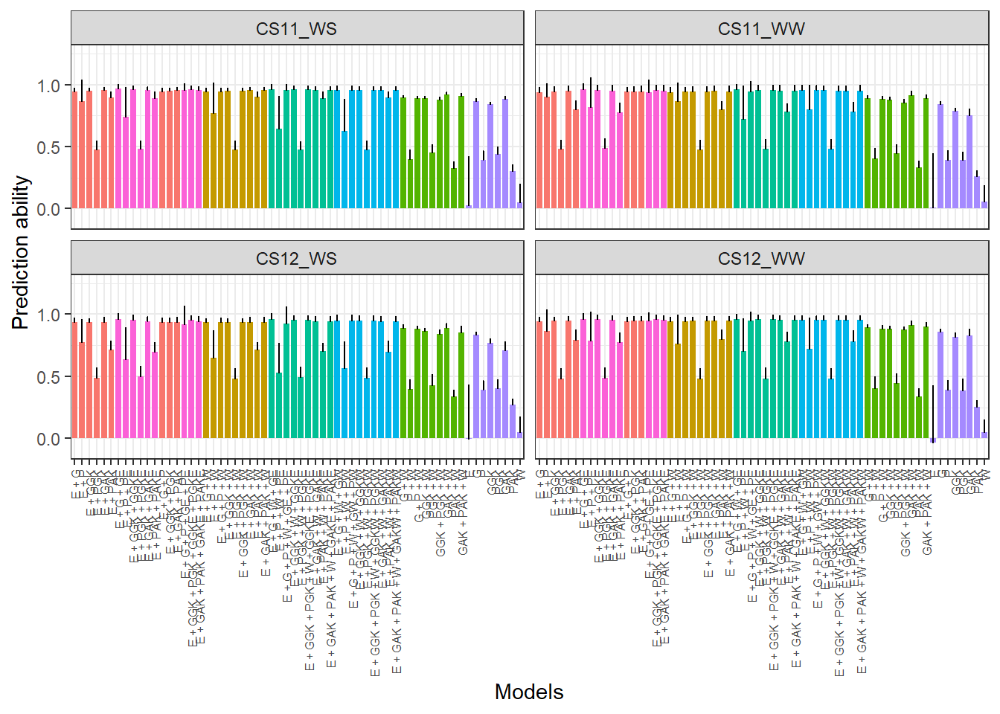
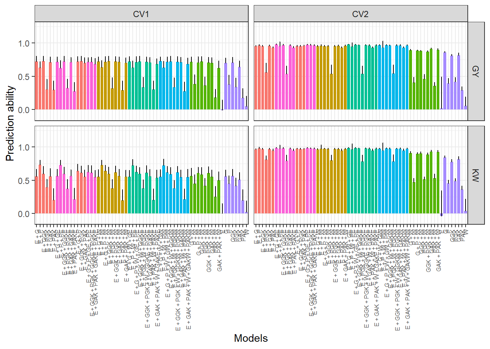

Last updated: 2025-11-03
Checks: 6 1
Knit directory:
Integrating-nir-genomic-kernel/
This reproducible R Markdown analysis was created with workflowr (version 1.7.2). The Checks tab describes the reproducibility checks that were applied when the results were created. The Past versions tab lists the development history.
The R Markdown file has unstaged changes. To know which version of
the R Markdown file created these results, you’ll want to first commit
it to the Git repo. If you’re still working on the analysis, you can
ignore this warning. When you’re finished, you can run
wflow_publish to commit the R Markdown file and build the
HTML.
Great job! The global environment was empty. Objects defined in the global environment can affect the analysis in your R Markdown file in unknown ways. For reproduciblity it’s best to always run the code in an empty environment.
The command set.seed(20250829) was run prior to running
the code in the R Markdown file. Setting a seed ensures that any results
that rely on randomness, e.g. subsampling or permutations, are
reproducible.
Great job! Recording the operating system, R version, and package versions is critical for reproducibility.
Nice! There were no cached chunks for this analysis, so you can be confident that you successfully produced the results during this run.
Great job! Using relative paths to the files within your workflowr project makes it easier to run your code on other machines.
Great! You are using Git for version control. Tracking code development and connecting the code version to the results is critical for reproducibility.
The results in this page were generated with repository version c6199f9. See the Past versions tab to see a history of the changes made to the R Markdown and HTML files.
Note that you need to be careful to ensure that all relevant files for
the analysis have been committed to Git prior to generating the results
(you can use wflow_publish or
wflow_git_commit). workflowr only checks the R Markdown
file, but you know if there are other scripts or data files that it
depends on. Below is the status of the Git repository when the results
were generated:
Ignored files:
Ignored: .Rhistory
Ignored: .Rproj.user/
Ignored: data/Article_documents/
Ignored: data/Maize-NIRS-GBS-main/
Ignored: output/ajuste_modelo/
Ignored: output/componentes_variancia/Variance.Components.DAT.Means.Parsed.csv
Ignored: output/componentes_variancia/Variance.Components.DAT.Means.csv
Ignored: output/componentes_variancia/rep_1/Eta1/full_Eta1_GY_rep1_ETA_E_varB.dat
Ignored: output/componentes_variancia/rep_1/Eta1/full_Eta1_GY_rep1_ETA_G_varU.dat
Ignored: output/componentes_variancia/variance_components_percentage_GY.tiff
Ignored: output/componentes_variancia/variance_components_percentage_KW.tiff
Ignored: output/results/
Unstaged changes:
Modified: analysis/analysis.Rmd
Modified: output/Pred.ability/Pred.ability.CV0.CV00.classified.csv
Note that any generated files, e.g. HTML, png, CSS, etc., are not included in this status report because it is ok for generated content to have uncommitted changes.
These are the previous versions of the repository in which changes were
made to the R Markdown (analysis/analysis.Rmd) and HTML
(docs/analysis.html) files. If you’ve configured a remote
Git repository (see ?wflow_git_remote), click on the
hyperlinks in the table below to view the files as they were in that
past version.
| File | Version | Author | Date | Message |
|---|---|---|---|---|
| Rmd | 904b83c | WevertonGomesCosta | 2025-11-03 | Remove arquivos de output antigos |
| Rmd | fe31a33 | WevertonGomesCosta | 2025-11-03 | add analysis.rmd script |
Este documento detalha o pipeline de análise para integrar dados de Espectroscopia de Refletância no Infravermelho Próximo (NIR), dados genômicos e climáticos usando métodos de kernel para aumentar a precisão da predição. A análise inclui o pré-processamento de dados, ajuste de modelos e avaliação do desempenho preditivo.
Este script foca especificamente nas etapas iniciais e cruciais de carregamento, limpeza e alinhamento dos diferentes tipos de dados.
Nesta etapa, carregamos nosso “kit de ferramentas” de pacotes R. Cada um deles é essencial para diferentes partes da análise:
tidyverse: Uma coleção de pacotes (como
dplyr e tidyr) para a manipulação, limpeza e
organização geral dos dados.data.table: Extremamente eficiente para ler e manipular
arquivos de dados muito grandes, como nossas matrizes genômicas (SNPs) e
espectrais (NIR).BGLR: O pacote central para a modelagem Bayesiana. Ele
será usado posteriormente para ajustar os modelos de predição genômica
usando os kernels que prepararemos.parallel & doParallel: Ferramentas
para paralelizar nossos cálculos. Essenciais para rodar as análises de
validação cruzada (CV) em tempo hábil.MASS: Contém funções estatísticas adicionais que podem
ser úteis.# Pacotes principais
library(tidyverse) # Manipulação de dados
library(data.table) # Leitura eficiente de grandes arquivos
library(BGLR) # Modelagem Bayesiana para predição genômica
# Paralelismo
library(parallel)
library(doParallel)
# Funções estatísticas adicionais
library(MASS) # Funções estatísticasOs dados utilizados nesta análise vêm de três fontes principais. O objetivo desta seção é carregá-los e garantir que estejam consistentes entre si.
Primeiro, carregamos os arquivos brutos do disco.
Pedigree, Env).GY (Produtividade) e KW (Peso de Grão), que
provavelmente são BLUPs calculados anteriormente.taxa: O ID do genótipo.NIR para isolar as variáveis de resposta (fenótipos) que
nossos modelos tentarão prever.Dados fenotípicos com leituras espectrais e os blups
# Carrega dados fenômicos (NIR)
NIR <- fread("data/NIR.csv") %>% as.data.frame()
# Visualização inicial
head(NIR[, 1:7]) # primeiras colunasunique(NIR$Env) # ambientes disponíveis[1] "CS11_WS" "CS11_WW" "CS12_WS" "CS12_WW"Dados genotípicos com marcadores SNP
# Carrega dados genotípicos (SNPs processados pelo GAPIT)
Geno <- fread("data/GAPIT.Genotype.Numerical.txt") %>% as.data.frame()
# Visualização inicial
head(Geno[, 1:5])Dados fenotipicos com BLUPs
# Extrai as colunas de ID (Pedigree, Env) e as traits (GY, KW) do
# dataframe NIR para criar nosso dataframe 'Pheno' (fenótipos).
Pheno <- NIR[, c("Pedigree", "Env", "GY", "KW")] %>%
arrange(Env, Pedigree) # Ordena os dados para consistência
# Visualização inicial
head(Pheno)Esta é uma etapa crítica. Nossos modelos assumem que
a linha i da matriz genômica (Geno) corresponde ao
indivíduo da linha i da matriz fenotípica (Pheno).
Se os dados não estiverem perfeitamente alinhados, os resultados serão
inválidos.
Aqui, garantimos que todos os dataframes (NIR,
Geno, Pheno) contenham exatamente o
mesmo conjunto de genótipos.
Filtra os dados para manter apenas os genótipos compartilhados em ambos os conjuntos
# Identifica genótipos compartilhados
# A função 'intersect' encontra os IDs de genótipos (Pedigree/taxa)
# que estão presentes EM AMBOS os arquivos, Geno e NIR.
Pedigree <- intersect(Geno$taxa, NIR$Pedigree)
# Filtra os dataframes para manter APENAS os genótipos compartilhados
NIR <- NIR[NIR$Pedigree %in% Pedigree, ]
Geno <- Geno[Geno$taxa %in% Pedigree, ]
Pheno <- Pheno[Pheno$Pedigree %in% Pedigree, ]
# Checagem de sanidade: verifica se o número de genótipos únicos
# é o mesmo em todos os objetos de dados.
cat("Genótipos em NIR:", length(unique(NIR$Pedigree)), "\n")Genótipos em NIR: 329 cat("Genótipos em Geno:", length(Geno$taxa), "\n")Genótipos em Geno: 329 cat("Genótipos em Pheno:", length(unique(Pheno$Pedigree)), "\n")Genótipos em Pheno: 329 Para modelar as interações Genótipo-por-Ambiente (GxE), muitas vezes precisamos analisar os dados por ambiente ou construir kernels específicos para cada ambiente.
Esta seção prepara os dados para essa análise, separando o
dataframe NIR (que contém os dados espectrais) em
quatro subconjuntos, um para cada ambiente experimental.
Separa NIR em quatro subconjuntos (a, b, c, d), correspondentes aos ambientes CS11_WS, CS11_WW, CS12_WS e CS12_WW.
# Cria um dataframe separado para cada um dos quatro ambientes
a <- NIR[NIR$Env == "CS11_WS", ]
b <- NIR[NIR$Env == "CS11_WW", ]
c <- NIR[NIR$Env == "CS12_WS", ]
d <- NIR[NIR$Env == "CS12_WW", ]
# Define nomes de linhas
# Define o 'Pedigree' como o nome da linha (rownames).
# Isso é essencial para alinhar matrizes e kernels posteriormente.
rownames(a) <- a$Pedigree
rownames(b) <- b$Pedigree
rownames(c) <- c$Pedigree
rownames(d) <- d$Pedigree
# Ordena por Pedigree
# Garante que as linhas em cada dataframe ambiental estejam
# na mesma ordem alfabética de 'Pedigree'.
a <- a[order(rownames(a)), ]
b <- b[order(rownames(b)), ]
c <- c[order(rownames(c)), ]
d <- d[order(rownames(d)), ]Embora já tenhamos filtrado os genótipos comuns entre
Geno e NIR, alguns genótipos podem não ter
sido cultivados em todos os quatro ambientes.
Para análises de interação GxE que exigem dados balanceados (ou para criar a matriz de parentesco principal), geralmente usamos apenas o conjunto de genótipos que têm dados em todos os ambientes.
Identifica os genótipos presentes em todos os ambientes
# Identifica os genótipos presentes em todos os ambientes
# 'Reduce(intersect, ...)' aplica a função 'intersect' cumulativamente
# à lista de IDs de pedigree dos 4 ambientes (a, b, c, d) e do 'Geno'.
# O resultado é a lista de genótipos que estão presentes em TODO LUGAR.
Pedigree_communs <- Reduce(intersect, list(Geno$taxa, a$Pedigree, b$Pedigree, c$Pedigree, d$Pedigree))
length(Pedigree_communs) # Número de genótipos consistentes[1] 146Nesta seção, criamos o kernel genômico, ZG. Um
“kernel” é fundamentalmente uma matriz de parentesco ou
similaridade.
O passo crucial aqui é que, em vez de criar um kernel único para os 300+ genótipos únicos, estamos criando um kernel para as observações (genótipo dentro de um ambiente). A lógica é:
Geno: Asseguramos
que a matriz genômica (Geno) esteja ordenada
alfabeticamente por genótipo (taxa), definimos os
rownames e removemos a coluna de ID, deixando apenas os
marcadores numéricos.scale(subset(Geno, ...)) para
padronizar (centralizar e escalonar) os marcadores SNP. Note que isso é
feito separadamente para o conjunto de genótipos em cada
ambiente (a, b, c, d). Isso padroniza os alelos com base na média e
variância daquele subconjunto específico de indivíduos.rbind): Combinamos as quatro
matrizes genômicas escalonadas (Geno.a, Geno.b, Geno.c, Geno.d) em uma
única matriz grande, Geno.all. A ordem das linhas em
Geno.all agora corresponde à ordem das observações no
dataframe Pheno.tcrossprod): Usamos
o produto cruzado (tcrossprod) dividido pelo número de
marcadores (ncol) para calcular a matriz de parentesco
genômico (similar ao método 1 de VanRaden).O resultado, ZG, é uma grande matriz de parentesco (N
total de observações x N total de observações) que representa a
similaridade genômica entre todas as observações.
# Ordena os dados genotípicos por taxa
Geno <- Geno[order(Geno$taxa), ]
rownames(Geno) <- Geno$taxa
Geno <- Geno[, -1] # remove coluna taxa
# Escalonamento por ambiente
Geno.a <- scale(subset(Geno, rownames(Geno) %in% a$Pedigree), center = TRUE, scale = TRUE)
Geno.b <- scale(subset(Geno, rownames(Geno) %in% b$Pedigree), center = TRUE, scale = TRUE)
Geno.c <- scale(subset(Geno, rownames(Geno) %in% c$Pedigree), center = TRUE, scale = TRUE)
Geno.d <- scale(subset(Geno, rownames(Geno) %in% d$Pedigree), center = TRUE, scale = TRUE)
# Combina todos os ambientes
Geno.all <- rbind(Geno.a, Geno.b, Geno.c, Geno.d)
dim(Geno.all)[1] 982 41456# Calcula matriz de relacionamento genômico
ZG <- tcrossprod(as.matrix(Geno.all)) / ncol(Geno.all)Uma rápida verificação das dimensões e dos primeiros elementos da
matriz ZG para garantir que o cálculo foi bem-sucedido.
# Checagem
dim(ZG)[1] 982 982ZG[1:5, 1:5] A188 A214N A4415 A632 A634
A188 1.081262206 -0.007936875 0.02849732 -0.01341945 0.01086622
A214N -0.007936875 1.106776982 -0.01406327 0.30335381 0.51863619
A4415 0.028497322 -0.014063270 0.97459897 -0.01030808 -0.01225142
A632 -0.013419454 0.303353810 -0.01030808 0.81053742 0.46287155
A634 0.010866216 0.518636190 -0.01225142 0.46287155 1.07224004Seguimos uma lógica idêntica à da seção anterior, mas desta vez usamos os dados espectrais do NIR (que chamamos de ‘P’ de phenomic ou proximal sensing).
NIR: Para cada ambiente (a,
b, c, d), removemos as 5 primeiras colunas de metadados (IDs, traits) e
usamos scale() para padronizar os valores de cada banda
espectral.rbind): Combinamos as quatro
matrizes NIR escalonadas em NIR.all.tcrossprod):
Calculamos ZP.O resultado, ZP, é uma matriz (N total x N total) que
mede a similaridade espectral entre cada par de
observações. A hipótese é que indivíduos com espectros NIR similares
podem compartilhar características fisiológicas ou de composição,
independentemente de seu parentesco genômico.
# Remove colunas de identificação
NIR.a <- scale(a[,-c(1:5)],center=TRUE,scale=TRUE)
NIR.b <- scale(b[,-c(1:5)],center=TRUE,scale=TRUE)
NIR.c <- scale(c[,-c(1:5)],center=TRUE,scale=TRUE)
NIR.d <- scale(d[,-c(1:5)],center=TRUE,scale=TRUE)
# Combina todos os ambientes
NIR.all <- rbind(NIR.a, NIR.b, NIR.c, NIR.d)
dim(NIR.all)[1] 982 3112# Calcula matriz de relacionamento fenômico
ZP <- tcrossprod(as.matrix(NIR.all)) / ncol(NIR.all)Novamente, verificamos as dimensões e o conteúdo da matriz
ZP.
# Checagem
dim(ZP)[1] 982 982ZP[1:5, 1:5] A188 A214N A4415 A632 A634
A188 2.0689756 0.12794826 -0.96853101 1.20893618 0.65051847
A214N 0.1279483 0.01220063 -0.05604141 0.06624954 0.03393302
A4415 -0.9685310 -0.05604141 0.46231635 -0.56784147 -0.29814444
A632 1.2089362 0.06624954 -0.56784147 0.82350392 0.52022985
A634 0.6505185 0.03393302 -0.29814444 0.52022985 0.38209739Esta é a forma mais simples de criar um kernel ambiental.
ZE):
model.matrix cria uma matriz “dummy” (ou one-hot
encoding). Ela tem uma linha para cada observação e uma coluna para
cada ambiente (4 colunas no total). Um valor ‘1’ é colocado na coluna
correspondente ao ambiente daquela observação.ZEZE): Ao calcular
tcrossprod(ZE), criamos uma matriz (N total x N total) onde
o elemento [i, j] é ‘1’ se as observações i e
j são do mesmo ambiente, e ‘0’ caso
contrário.Este kernel modela um efeito ambiental “clássico” (ou de bloco), onde todas as observações dentro de um mesmo ambiente são tratadas como 100% relacionadas entre si (em termos de ambiente) e 0% relacionadas a observações de outros ambientes.
# Cria matriz de incidência de ambientes (0/1)
ZE <- model.matrix(~ as.factor(Pheno$Env) - 1)
# Calcula matriz de relacionamento ambiental (produto cruzado)
ZEZE <- tcrossprod(ZE)
# Checagens
cat("Dimensões da matriz ZE:", dim(ZE), "\n")Dimensões da matriz ZE: 982 4 cat("Dimensões da matriz ZEZE:", dim(ZEZE), "\n")Dimensões da matriz ZEZE: 982 982 # Visualiza primeiras linhas
dim(ZE)[1] 982 4ZEZE[1:5, 1:5] 1 2 3 4 5
1 1 1 1 1 1
2 1 1 1 1 1
3 1 1 1 1 1
4 1 1 1 1 1
5 1 1 1 1 1Esta é uma abordagem muito mais sofisticada para
modelar o ambiente, em vez de apenas usar os blocos da Seção 6. O
objetivo é criar um kernel ZW (W de Weather,
Clima) onde a similaridade entre duas observações é baseada na
similaridade climática real dos seus ambientes.
A construção desta matriz W é complexa:
TMAX_AVG, GDD_CUM).
ECs.2011 e ECs.2012 armazenam esses
vetores.PRECTOTCORR).pivot_wider é usado para transformar os dados
diários de um formato “longo” (muitas linhas) para “largo”. O
resultado (env_wide_2011) é uma única
linha (um vetor) que contém a “assinatura climática” completa
daquele ano (ex: T2M_dia1, T2M_dia2, …, T2M_dia150).NA.NA os anos que não se aplicam.rbind combina tudo
na matriz W. W[is.na(W)] <- 0 substitui os
NAs por 0. Isso assume que a “não aplicabilidade” (ex:
dados de 2012 para uma observação de 2011) contribui com 0 para a
similaridade.ZW: Finalmente,
tcrossprod(W) cria o kernel. ZW é uma matriz
(N total x N total) que mede a similaridade climática detalhada entre
cada par de observações, usando tanto dados diários quanto
agregados.# --- 1. Preparação Inicial dos Dados Climáticos (Feita uma vez) ---
# Carrega os dados climáticos
ECs_data <- read.csv("output/climate_results/environmental_covariates.csv") %>%
dplyr::select(PRECTOTCORR:date, T_eff_min:VPD_STRESS_DAYS)
# --- 2. Escalonamento dos Dados Climáticos (Feito 1x) ---
# Seleciona apenas as covariáveis AGREGADAS (médias, somas)
ECs_data_scaled <- ECs_data %>%
dplyr::select(TMAX_AVG:VPD_STRESS_DAYS) %>%
scale(., center = TRUE, scale = TRUE) %>% unique()
# Cria ECs.2011 (1 linha com dados agregados e escalonados de 2011)
ECs.2011 <- matrix(ECs_data_scaled[1, ], nrow = 1)
colnames(ECs.2011) <- colnames(ECs_data_scaled)
# Cria ECs.2012 (1 linha com dados agregados e escalonados de 2012)
ECs.2012 <- matrix(ECs_data_scaled[2, ], nrow = 1)
colnames(ECs.2012) <- colnames(ECs_data_scaled)
# Prepara 2011: Filtra dados DIÁRIOS, extrai datas e escala
ECs.2011_filtered <- ECs_data %>% filter(year == 2011)
ECs.2011_scaled <- ECs.2011_filtered %>%
dplyr::select(-year, -date, -(TMAX_AVG:VPD_STRESS_DAYS)) %>%
scale(. , center = TRUE, scale = TRUE)
ECs.2011_dates <- ECs.2011_filtered$date
# Prepara 2012: Filtra dados DIÁRIOS, extrai datas e escala
ECs.2012_filtered <- ECs_data %>% filter(year == 2012)
ECs.2012_scaled <- ECs.2012_filtered %>%
dplyr::select(-year, -date, -(TMAX_AVG:VPD_STRESS_DAYS)) %>%
scale(., center = TRUE, scale = TRUE)
ECs.2012_dates <- ECs.2012_filtered$date
# --- 3. Criar a Linha Única de Dados Climáticos "Largos" (Feito 2x) ---
# Cria o dataframe "largo" (1 linha) para 2011 (assinatura diária)
env_wide_2011 <- as.data.frame(ECs.2011_scaled) %>%
mutate(date = ECs.2011_dates) %>%
pivot_wider(names_from = date, values_from = -date)
# Cria o dataframe "largo" (1 linha) para 2012 (assinatura diária)
env_wide_2012 <- as.data.frame(ECs.2012_scaled) %>%
mutate(date = ECs.2012_dates) %>%
pivot_wider(names_from = date, values_from = -date)
# --- 4. Construção das Matrizes por Ambiente (em etapas) ---
# (Assumindo que os dataframes 'a', 'b', 'c', e 'd' já existem)
# Etapa A: Ambiente CS11_WS
pedigrees_a <- a$Pedigree
ECs.a <- env_wide_2011[rep(1, length(pedigrees_a)), ] # Repete a assinatura diária de 2011
ECs.a <- cbind(ECs.a, matrix(
NA,
nrow = length(pedigrees_a),
ncol = length(env_wide_2012),
dimnames = list(pedigrees_a, colnames(env_wide_2012))
)) # Adiciona colunas NA para 2012
ECs.a <- cbind(ECs.a, ECs.2011) %>% as.matrix() # Adiciona os dados agregados de 2011
rownames(ECs.a) <- pedigrees_a
dim(ECs.a)[1] 196 4607# Etapa B: Ambiente CS11_WW
pedigrees_b <- b$Pedigree
ECs.b <- env_wide_2011[rep(1, length(pedigrees_b)), ]
ECs.b <- cbind(ECs.b, matrix(
NA,
nrow = length(pedigrees_b),
ncol = length(env_wide_2012),
dimnames = list(pedigrees_b, colnames(env_wide_2012))
)) # Adiciona dados de 2012
ECs.b <- cbind(ECs.b, ECs.2011) %>% as.matrix()
rownames(ECs.b) <- pedigrees_b
dim(ECs.b)[1] 263 4607# Etapa C: Ambiente CS12_WS
pedigrees_c <- c$Pedigree
ECs.c <- env_wide_2012[rep(1, length(pedigrees_c)), ] # Repete a assinatura diária de 2012
ECs.c <- cbind(matrix(
NA,
nrow = length(pedigrees_c),
ncol = length(env_wide_2011),
dimnames = list(pedigrees_c, colnames(env_wide_2011))
), ECs.c) # Adiciona colunas NA para 2011
ECs.c <- cbind(ECs.c, ECs.2012) %>% as.matrix() # Adiciona os dados agregados de 2012
rownames(ECs.c) <- pedigrees_c
dim(ECs.c)[1] 310 4607# Etapa D: Ambiente CS12_WW
pedigrees_d <- d$Pedigree
ECs.d <- env_wide_2012[rep(1, length(pedigrees_d)), ]
ECs.d <- cbind(matrix(
NA,
nrow = length(pedigrees_d),
ncol = length(env_wide_2011),
dimnames = list(pedigrees_d, colnames(env_wide_2011))
), ECs.d) # Adiciona dados de 2011
ECs.d <- cbind(ECs.d, ECs.2012) %>% as.matrix()
rownames(ECs.d) <- pedigrees_d
dim(ECs.d)[1] 213 4607# --- 5. Combinação e Criação da Matriz W ---
W <- rbind(ECs.a, ECs.b, ECs.c, ECs.d)
# Verificação
dim(W)[1] 982 4607W[1:5, 1:5] PRECTOTCORR_2011-05-01 PRECTOTCORR_2011-05-02 PRECTOTCORR_2011-05-03
A188 -0.2836821 -0.02845919 -0.2475899
A214N -0.2836821 -0.02845919 -0.2475899
A4415 -0.2836821 -0.02845919 -0.2475899
A632 -0.2836821 -0.02845919 -0.2475899
A634 -0.2836821 -0.02845919 -0.2475899
PRECTOTCORR_2011-05-04 PRECTOTCORR_2011-05-05
A188 -0.2836821 -0.2811041
A214N -0.2836821 -0.2811041
A4415 -0.2836821 -0.2811041
A632 -0.2836821 -0.2811041
A634 -0.2836821 -0.2811041# Substitui NAs por 0 para permitir o cálculo do tcrossprod
W[is.na(W)] <- 0
# 6. Calcular a matriz de relacionamento
ZW <- tcrossprod(as.matrix(W)) / ncol(W)
table(ZW[1,])
-0.00367797795625015 0.498577044593978
523 459 # Visualização do Kernel Ambiental
dim(ZW)[1] 982 982ZW[1:5, 1:5] A188 A214N A4415 A632 A634
A188 0.498577 0.498577 0.498577 0.498577 0.498577
A214N 0.498577 0.498577 0.498577 0.498577 0.498577
A4415 0.498577 0.498577 0.498577 0.498577 0.498577
A632 0.498577 0.498577 0.498577 0.498577 0.498577
A634 0.498577 0.498577 0.498577 0.498577 0.498577Antes de prosseguir para a modelagem, executamos algumas verificações cruciais.
Primeiro, uma verificação pontual (spot-check) para um genótipo específico (‘A188’) para ver se os dados parecem corretos e alinhados nas matrizes empilhadas.
Geno.all[str_detect(rownames(Geno.all), "A188"), 1:5] S1_517642 S1_1000282 S1_1763292 S1_1763397 S1_2088440
A188 -0.3244447 -0.4954853 0.4389794 -0.5765720 -0.2468038
A188 -0.3071575 -0.5046434 0.4309819 -0.5753945 -0.2647288
A188 -0.3068291 -0.4844154 0.4318786 -0.5471143 -0.2895119
A188 -0.3277855 -0.4725198 0.4256480 -0.5603790 -0.2964903W[str_detect(rownames(W), "A188"), 1:5] PRECTOTCORR_2011-05-01 PRECTOTCORR_2011-05-02 PRECTOTCORR_2011-05-03
A188 -0.2836821 -0.02845919 -0.2475899
A188 -0.2836821 -0.02845919 -0.2475899
A188 0.0000000 0.00000000 0.0000000
A188 0.0000000 0.00000000 0.0000000
PRECTOTCORR_2011-05-04 PRECTOTCORR_2011-05-05
A188 -0.2836821 -0.2811041
A188 -0.2836821 -0.2811041
A188 0.0000000 0.0000000
A188 0.0000000 0.0000000NIR.all[str_detect(rownames(W), "A188"), 1:5] X3999.640137 X4001.568604 X4003.497071 X4005.425537 X4007.354004
A188 -1.701604 -1.696844 -1.696844 -1.696283 -1.696195
A188 -1.120197 -1.112012 -1.112012 -1.110283 -1.111711
A188 -1.398754 -1.393058 -1.393058 -1.392220 -1.392757
A188 -1.523355 -1.518600 -1.518600 -1.517747 -1.517932Esta é a verificação de alinhamento mais importante
da análise. Antes de passar os kernels para o BGLR, devemos
garantir que todos eles (ZW, ZG,
ZP) são:
Se todos os testes abaixo retornarem TRUE, nossos
kernels estão perfeitamente alinhados e prontos para a
modelagem.
all(rownames(ZW) == colnames(ZW))[1] TRUEall(rownames(ZG) == colnames(ZG))[1] TRUEall(rownames(ZP) == colnames(ZP))[1] TRUEall(rownames(ZW) == rownames(ZG))[1] TRUEall(rownames(ZW) == rownames(ZP))[1] TRUEall(colnames(ZW) == colnames(ZG))[1] TRUEall(colnames(ZW) == colnames(ZP))[1] TRUEall(unique(rownames(ZG)) == unique(colnames(ZG)))[1] TRUEall(unique(rownames(ZP)) == unique(colnames(ZP)))[1] TRUEall(unique(rownames(ZW)) == unique(colnames(ZW)))[1] TRUEPor fim, inspecionamos os cantos superiores esquerdos das três
matrizes de relacionamento. Isso nos dá uma ideia visual dos valores de
similaridade calculados e confirma que os rownames e
colnames estão idênticos.
ZW[1:5, 1:5] A188 A214N A4415 A632 A634
A188 0.498577 0.498577 0.498577 0.498577 0.498577
A214N 0.498577 0.498577 0.498577 0.498577 0.498577
A4415 0.498577 0.498577 0.498577 0.498577 0.498577
A632 0.498577 0.498577 0.498577 0.498577 0.498577
A634 0.498577 0.498577 0.498577 0.498577 0.498577ZG[1:5, 1:5] A188 A214N A4415 A632 A634
A188 1.081262206 -0.007936875 0.02849732 -0.01341945 0.01086622
A214N -0.007936875 1.106776982 -0.01406327 0.30335381 0.51863619
A4415 0.028497322 -0.014063270 0.97459897 -0.01030808 -0.01225142
A632 -0.013419454 0.303353810 -0.01030808 0.81053742 0.46287155
A634 0.010866216 0.518636190 -0.01225142 0.46287155 1.07224004ZP[1:5, 1:5] A188 A214N A4415 A632 A634
A188 2.0689756 0.12794826 -0.96853101 1.20893618 0.65051847
A214N 0.1279483 0.01220063 -0.05604141 0.06624954 0.03393302
A4415 -0.9685310 -0.05604141 0.46231635 -0.56784147 -0.29814444
A632 1.2089362 0.06624954 -0.56784147 0.82350392 0.52022985
A634 0.6505185 0.03393302 -0.29814444 0.52022985 0.38209739Nesta seção, começamos a modelar as interações, como Genótipo-por-Ambiente (GxE) e Fenótipo-por-Ambiente (PxE). Estas interações são cruciais para entender como o desempenho de um genótipo (ou seu perfil NIR) muda em diferentes condições.
O método usado aqui é o produto de Hadamard (a
multiplicação simples, elemento a elemento, * no R). A
lógica é a seguinte:
ZGZE = ZG * ZEZE: Esta matriz representa a interação
Genômico × Ambiente (Categórico). Um elemento
[i, j] nesta matriz só será diferente de zero se as
observações i e j forem do mesmo
ambiente (de ZEZE) E se elas estiverem
genomicamente relacionadas (de ZG). Isso
isola a variação genômica que é específica de cada ambiente.ZPZE: Da mesma forma, representa a interação
Fenômico/NIR × Ambiente (Categórico).ZGZW e ZPZW: Representam as interações
Genômico × Clima e Fenômico/NIR ×
Clima. Esta é uma abordagem mais avançada, pois a força da
interação não se baseia apenas em “estar no mesmo ambiente” (como
ZEZE), mas na “similaridade climática real” (de
ZW).# Interação genômica × ambiente
ZGZE <- ZG * ZEZE
ZGZE[1:5, 1:5] A188 A214N A4415 A632 A634
A188 1.081262206 -0.007936875 0.02849732 -0.01341945 0.01086622
A214N -0.007936875 1.106776982 -0.01406327 0.30335381 0.51863619
A4415 0.028497322 -0.014063270 0.97459897 -0.01030808 -0.01225142
A632 -0.013419454 0.303353810 -0.01030808 0.81053742 0.46287155
A634 0.010866216 0.518636190 -0.01225142 0.46287155 1.07224004# Interação fenômica × ambiente
ZPZE <- ZP * ZEZE
ZPZE[1:5, 1:5] A188 A214N A4415 A632 A634
A188 2.0689756 0.12794826 -0.96853101 1.20893618 0.65051847
A214N 0.1279483 0.01220063 -0.05604141 0.06624954 0.03393302
A4415 -0.9685310 -0.05604141 0.46231635 -0.56784147 -0.29814444
A632 1.2089362 0.06624954 -0.56784147 0.82350392 0.52022985
A634 0.6505185 0.03393302 -0.29814444 0.52022985 0.38209739# Interação genômica × clima
ZGZW <- ZG * ZW
ZGZW[1:5, 1:5] A188 A214N A4415 A632 A634
A188 0.539092515 -0.003957144 0.014208110 -0.006690632 0.005417646
A214N -0.003957144 0.551813597 -0.007011624 0.151245246 0.258580099
A4415 0.014208110 -0.007011624 0.485912677 -0.005139370 -0.006108278
A632 -0.006690632 0.151245246 -0.005139370 0.404115351 0.230777129
A634 0.005417646 0.258580099 -0.006108278 0.230777129 0.534594272# Interação fenômica × clima
ZPZW <- ZP * ZW
ZPZW[1:5, 1:5] A188 A214N A4415 A632 A634
A188 1.03154375 0.063792065 -0.48288733 0.6027478 0.32433358
A214N 0.06379207 0.006082952 -0.02794096 0.0330305 0.01691823
A4415 -0.48288733 -0.027940960 0.23050032 -0.2831127 -0.14864797
A632 0.60274783 0.033030500 -0.28311272 0.4105802 0.25937466
A634 0.32433358 0.016918227 -0.14864797 0.2593747 0.19050499Objetivo geral: Os kernels lineares que
criamos até agora (ZG, ZP) capturam apenas
relações aditivas. No entanto, as interações biológicas
são frequentemente não-lineares. Para capturar esses
padrões complexos, construiremos dois tipos de kernels
não-lineares. Estes kernels serão então usados para construir
os modelos na seção 10.
Tipos de kernels:
Construir kernels baseados em funções de similaridade gaussiana, que capturam relações não lineares entre genótipos e fenótipos.
Antes de construir o kernel, precisamos encontrar o
hiperparâmetro de suavidade (h) ideal. Um
h errado pode fazer o modelo ter overfitting ou
underfitting.
Esta função, margh.fun, é uma “função objetivo” que será
usada por um otimizador (optim). Seu objetivo é encontrar o
valor de h (e um parâmetro de escala phi) que
maximiza a log-verossimilhança marginal.
Em termos simples: dado o nosso kernel candidato
(Kh) e nossos dados fenotípicos (y), a função
calcula o quão “prováveis” são os dados. O otimizador encontrará o
h que torna os dados o mais provável possível.
Kh <- exp(-h * D / q): Constrói o kernel
gaussiano candidato.eigenKh: Realiza a decomposição espectral, um passo
matemático necessário.lden <- ...: Calcula a log-verossimilhança
marginal.return(-(lden + lprior)): Retorna o negativo
da log-verossimilhança (pois os otimizadores, por padrão,
minimizam).# Função de otimização do hiperparâmetro h
margh.fun <- function(theta, y, D, q, nu = 0.0001, Sc = 0.0001,
nuh = NULL, Sch = NULL, prior = NULL) {
h <- theta[1] # Parâmetro de suavidade do kernel
phi <- theta[2] # Parâmetro de escala
Kh <- exp(-h * D / q) # Matriz kernel gaussiana
eigenKh <- eigen(Kh) # Decomposição espectral
nr <- length(which(eigenKh$values > 1e-10)) # Número de componentes relevantes
Uh <- eigenKh$vectors[, 1:nr] # Autovetores
Sh <- eigenKh$values[1:nr] # Autovalores
d <- t(Uh) %*% scale(y, scale = FALSE) # Projeção dos dados
# Log-verossimilhança marginal
lden <- -0.5 * sum(log(1 + phi * Sh)) -
(nu + nr - 1) / 2 * log(Sc + sum(d^2 / (1 + phi * Sh)))
# Prior opcional sobre h
if (!is.null(prior)) {
lprior <- dgamma(h, nuh, Sch, log = TRUE)
} else {
lprior <- 0
}
return(-(lden + lprior)) # Retorna negativo da log-verossimilhança
}Aqui, aplicamos a função de otimização aos nossos dados genômicos.
DG <- (as.matrix(dist(Geno)))^2: Calcula a matriz de
distância Euclidiana ao quadrado entre todos os
genótipos únicos (ex: 300x300).DG_proj <- ...: Este é um passo crucial.
DG é uma matriz de genótipos únicos, mas nosso modelo
precisa de um kernel no espaço das observações
(ex: 1200x1200). Este código “projeta” a matriz de distância
DG para o espaço de observação Pheno usando a
matriz de incidência Z. O resultado
DG_proj[i, j] conterá a distância genômica entre a
observação i e a observação j.solG <- optim(...): Executa o otimizador
(optim) usando margh.fun para encontrar o
melhor h (baseado no trait Pheno$GY).hG <- solG$par[1]: Extrai o valor h
otimizado.GGK <- ...: Constrói a matriz kernel
GGK final usando o hG otimizado.# Distâncias genômicas
DG <- (as.matrix(dist(Geno)))^2
q05G <- quantile(DG, 0.05)
# Projeta DG para o espaço dos genótipos
IDs <- as.character(Pheno$Pedigree)
DG <- DG[rownames(DG) %in% IDs, rownames(DG) %in% IDs]
IDs <- factor(IDs, levels = rownames(DG))
Z <- as.matrix(model.matrix(~ IDs - 1))
ZD <- tcrossprod(Z, DG)
DG_proj <- tcrossprod(ZD, Z)# Otimização
solG <- optim(c(1, 1), margh.fun, y = Pheno$GY, D = DG_proj, q = q05G,
method = "L-BFGS-B", lower = c(0.05, 0.05), upper = c(6, 30))hG <- solG$par[1]
# Kernel genômico
GGK <- exp(-hG * DG_proj / median(DG_proj))# Checagem
dim(GGK)[1] 982 982GGK[1:5,1:5] 1 2 3 4 5
1 1.0000000 0.8497877 0.8631009 0.8646340 0.8533364
2 0.8497877 1.0000000 0.8538890 0.9055212 0.9197739
3 0.8631009 0.8538890 1.0000000 0.8717643 0.8563903
4 0.8646340 0.9055212 0.8717643 1.0000000 0.9283440
5 0.8533364 0.9197739 0.8563903 0.9283440 1.0000000Repetimos a mesma lógica, mas desta vez usando os dados espectrais (NIR).
DP <- (as.matrix(dist(NIR.all)))^2: Calcula a matriz
de distância Euclidiana ao quadrado diretamente dos dados espectrais
(NIR.all). Como NIR.all já está no nível de
observação (N total x N total), esta matriz DP já tem a
dimensão correta.DP_proj <- ...: Este passo projeta a matriz
DP (apesar de já ter a dimensão correta), garantindo que
ela esteja perfeitamente alinhada com os rownames das
outras matrizes kernel.solP <- optim(...): Executa o otimizador para
encontrar o hP ideal para os dados NIR.PGK <- ...: Constrói o kernel
PGK final usando o hP otimizado.# Distâncias fenômicas
DP <- (as.matrix(dist(NIR.all)))^2
q05P <- quantile(DP, 0.05)
IDs <- rownames(NIR.all)
DP <- DP[rownames(DP) %in% IDs, rownames(DP) %in% IDs]
IDs <- IDs
Z <- as.matrix(model.matrix(~ IDs - 1))
Z0 <- tcrossprod(Z, Z)
ZD <- tcrossprod(Z0, DP)
DP_proj <- tcrossprod(ZD, Z0)# Otimização
solP <- optim(c(1, 1), margh.fun, y = Pheno$GY, D = DP_proj, q = q05P,
method = "L-BFGS-B", lower = c(0.05, 0.05), upper = c(6, 30))hP <- solP$par[1]
# Kernel fenômico
PGK <- exp(-hP * DP_proj / median(DP_proj))# Checagem
dim(PGK)[1] 982 982PGK[1:5,1:5] 1 2 3 4 5
1 0.87403262 0.3796616 0.03628784 0.65759840 0.5252460
2 0.37966157 0.9587605 0.55512924 0.30646878 0.7413911
3 0.03628784 0.5551292 0.98313980 0.03056525 0.2830190
4 0.65759840 0.3064688 0.03056525 0.81623029 0.6457647
5 0.52524603 0.7413911 0.28301896 0.64576475 0.9899681Agora, podemos criar kernels de interação não-linear usando
o produto de Hadamard com nossos novos kernels GGK
e PGK. Isso nos permite modelar interações GxE e PxE
não-lineares.
GGKE <- GGK * ZEZE
PGKE <- PGK * ZEZE
GGKW <- GGK * ZW
PGKW <- PGK * ZWEste é um método alternativo para capturar não-linearidade. O kernel Arc-cosseno é baseado no ângulo (ou correlação) entre os vetores de características dos indivíduos.
Uma característica chave deste método é o “nível de recursão”
(nl). Um nl = 1 é como um modelo linear, mas
nl > 1 é análogo a adicionar camadas a uma rede neural,
permitindo que o kernel capture padrões cada vez mais
complexos.
Precisamos de um conjunto de funções para construir e otimizar este kernel.
AK1.fun(X): Constrói o kernel de nível 1
(base). Ele calcula a correlação, converte em ângulo (acos)
e então calcula o kernel com base nesse ângulo.AK.fun(AK1, nl): A função de recursão. Ela pega um
kernel (como AK1) e aplica a transformação de
arc-cosseno nl vezes.marg.AK(y, AK1, ml): A função de otimização. Assim como
margh.fun, ela usa a log-verossimilhança marginal. Ela
testa iterativamente nl = 1, nl = 2, etc., até
um máximo ml, e retorna o nível
nl que maximizou a verossimilhança.###############################################################
# Código para AK (arc-cosseno Kernel)
# Referência: Crossa et al., 2019
# Objetivo: Ajustar um modelo de predição genômica usando kernel arc-cosseno
# com seleção automática do nível de recursão e modelagem de interação G×E.
###############################################################
# Função para calcular o kernel arc-cosseno de nível 1
AK1.fun <- function(X) {
n <- nrow(X)
cosalfa <- cor(t(X)) # Correlação entre vetores
cosalfa[cosalfa > 1] <- 1
cosalfa[cosalfa < -1] <- -1
angulo <- acos(cosalfa) # Ângulo entre vetores
mag <- sqrt(apply(X, 1, function(x) crossprod(x))) # Magnitude dos vetores
sxy <- tcrossprod(mag) # Produto cruzado das magnitudes
AK1 <- (1 / pi) * sxy * (sin(angulo) + (pi - angulo) * cosalfa)
AK1 <- AK1 / median(AK1, na.rm = TRUE) # Normalização
colnames(AK1) <- rownames(X)
rownames(AK1) <- rownames(X)
return(AK1)
}
# Função para selecionar o nível ótimo de recursão
marg.AK <- function(y, AK1, ml) {
lden.fun <- function(phi, nr, Uh, Sh, d) {
lden <- -0.5 * sum(log((1 + phi * Sh))) - (nr - 1) / 2 * log(sum(d^2 / ((1 + phi * Sh))))
return(-lden)
}
vero <- function(y, GC) {
Kh <- GC
eigenKh <- eigen(Kh)
nr <- length(which(eigenKh$values > 1e-10))
Uh <- eigenKh$vectors[, 1:nr]
Sh <- eigenKh$values[1:nr]
d <- t(Uh) %*% scale(y, scale = FALSE)
sol <- optimize(lden.fun, nr = nr, Uh = Uh, Sh = Sh, d = d,
lower = 0.0005, upper = 200)
phi <- sol[[1]]
log.vero <- 0.5 * sum(log((1 + phi * Sh))) -
(nr - 1) / 2 * log(sum(d^2 / ((1 + phi * Sh))))
return(log.vero)
}
GC <- AK1
l <- 1
GC2 <- GC
vero1 <- vero(y = y, GC = GC2)
m <- 0
while (m == 0 && (l < ml)) {
l <- l + 1
GC <- AK.fun(AK1 = GC2, nl = 1)
GC2 <- GC
vero2 <- vero(y = y, GC = GC2)
if (vero2 < vero1) m = 1
vero1 <- vero2
}
return(l - 1) # Retorna o nível ótimo de recursão
}
# Função para aplicar recursão ao kernel arc-cosseno
AK.fun <- function(AK1, nl) {
n <- nrow(AK1)
AK <- AK1
for (l in 1:nl) {
Aux <- tcrossprod(diag(AK))
cosalfa <- AK * (Aux^(-1 / 2))
cosa <- as.vector(cosalfa)
cosa[cosa > 1] <- 1
cosa[cosa < -1] <- -1
angulo <- acos(cosa)
angulo <- matrix(angulo, n, n)
AK <- (1 / pi) * (Aux^(1 / 2)) * (sin(angulo) + (pi - angulo) * cos(angulo))
}
AK <- AK / median(AK, na.rm = TRUE)
rownames(AK) <- rownames(AK1)
colnames(AK) <- colnames(AK1)
return(AK)
}GAK1 <- AK1.fun(Geno): Calcula o kernel
base (nl=1) a partir dos dados dos genótipos
únicos.G <- tcrossprod(...): Projeta o kernel
GAK1 (ex: 300x300) para o espaço de
observação (ex: 1200x1200) para a otimização.Gl <- marg.AK(...): Executa a otimização para
encontrar o nível de recursão ótimo (Gl)
que melhor explica Pheno$GY.G.L <- tcrossprod(...): Projeta o kernel
base GAK1 para o espaço de observação final (similar ao
passo 2).GAK <- AK.fun(...): Constrói o kernel
GAK final aplicando a transformação de
arc-cosseno Gl vezes.# Calcula o kernel arc-cosseno de nível 1 com base na matriz de marcadores
GAK1 <- AK1.fun(Geno)
dim(GAK1)[1] 329 329GAK1[1:5, 1:5] A188 A214N A239 A4415 A554
A188 1.7685173 0.9584083 1.0038980 1.0262802 1.0011397
A214N 0.9584083 1.7942427 0.9810621 0.9950431 0.9604347
A239 1.0038980 0.9810621 1.7661590 1.0208122 1.0081672
A4415 1.0262802 0.9950431 1.0208122 1.7922089 1.0261770
A554 1.0011397 0.9604347 1.0081672 1.0261770 1.7531340# Seleciona os IDs do conjunto de dados
IDs <- as.character(Pheno[, "Pedigree"])
GAK1 <- GAK1[rownames(GAK1) %in% IDs, rownames(GAK1) %in% IDs]
# Projeta o kernel para o espaço dos genótipos de treino
IDs <- factor(IDs, levels = rownames(GAK1))
Z <- as.matrix(model.matrix(~ IDs - 1))
G <- tcrossprod(tcrossprod(Z, GAK1), Z)
# Seleciona o nível ótimo de recursão
Gl <- marg.AK(y = Pheno$GY, AK1 = G, ml = 50)
# Projeta o kernel para todos os indivíduos
IDs.L <- Pheno[, "Pedigree"]
IDs.L <- factor(IDs.L, levels = rownames(GAK1))
Z.L <- as.matrix(model.matrix(~ IDs.L - 1))
G.L <- tcrossprod(tcrossprod(Z.L, GAK1), Z.L)
# Aplica recursão
GAK <- AK.fun(AK1 = G.L, nl = Gl)# Checagem
dim(GAK)[1] 982 982GAK[1:5, 1:5] 1 2 3 4 5
1 0.9990646 0.9946313 0.9942027 0.9960061 0.9942696
2 0.9946313 1.0135973 1.0013290 1.0038101 1.0024601
3 0.9942027 1.0013290 1.0124484 1.0027557 1.0009561
4 0.9960061 1.0038101 1.0027557 1.0160907 1.0039067
5 0.9942696 1.0024601 1.0009561 1.0039067 1.0127906Repetimos a lógica para os dados NIR.
PAK1 <- AK1.fun(NIR.all): Calcula o kernel
base (nl=1) a partir dos dados espectrais
(NIR.all).P <- tcrossprod(...): Projeta/alinha o
kernel PAK1.Pl <- marg.AK(...): Encontra o nível de
recursão ótimo (Pl) para os dados NIR.P.L <- tcrossprod(...): Projeta o kernel
base PAK1 para o espaço de observação final.PAK <- AK.fun(...): Constrói o kernel
PAK final aplicando a transformação
Pl vezes.# Calcula o kernel arc-cosseno de nível 1 com base na matriz fenômica
PAK1 <- AK1.fun(NIR.all)
dim(PAK1)[1] 982 982PAK1[1:5, 1:5] A188 A214N A4415 A632 A634
A188 20.11384819 1.0354311 1.5396601 0.04303532 0.1343575
A214N 1.03543108 0.1186102 0.3223817 0.13156365 0.1268015
A4415 1.53966005 0.3223817 4.4944758 4.08786393 3.2061644
A632 0.04303532 0.1315636 4.0878639 8.00581345 5.3267106
A634 0.13435748 0.1268015 3.2061644 5.32671059 3.7146155# Seleciona os IDs do conjunto de dados
IDs <- as.character(rownames(NIR.all))
PAK1 <- PAK1[rownames(PAK1) %in% IDs, rownames(PAK1) %in% IDs]
# Projeta o kernel para o espaço dos fenótipos
IDs <- IDs
Z <- as.matrix(model.matrix(~ IDs - 1))
Z0 <- tcrossprod(Z, Z)
ZD <- tcrossprod(Z0, PAK1)
P <- tcrossprod(ZD, Z0)
# Seleciona o nível ótimo de recursão
Pl <- marg.AK(y = Pheno$GY, AK1 = P, ml = 50)
# Projeta o kernel para todos os indivíduos
IDs.L <- rownames(NIR.all)
Z.L <- as.matrix(model.matrix(~ IDs.L - 1))
Z0.L <- tcrossprod(Z.L, Z.L)
P.L <- tcrossprod(tcrossprod(Z0.L, PAK1), Z0.L)
# Aplica recursão
PAK <- AK.fun(AK1 = P.L, nl = Pl)dim(PAK)[1] 982 982PAK[1:5, 1:5] 1 2 3 4 5
1 6.8121174 0.8792315 1.3764872 2.3285678 1.0422713
2 0.8792315 0.1710425 0.3189383 0.4146304 0.1960632
3 1.3764872 0.3189383 1.1884678 1.8624650 0.9143113
4 2.3285678 0.4146304 1.8624650 7.7687820 3.3814512
5 1.0422713 0.1960632 0.9143113 3.3814512 1.5229572Finalmente, criamos os kernels de interação não-linear
finais usando o produto de Hadamard com GAK e
PAK.
# GAK × Ambiente
GAKE <- GAK * ZEZE
GAKE[1:5,1:5] 1 2 3 4 5
1 0.9990646 0.9946313 0.9942027 0.9960061 0.9942696
2 0.9946313 1.0135973 1.0013290 1.0038101 1.0024601
3 0.9942027 1.0013290 1.0124484 1.0027557 1.0009561
4 0.9960061 1.0038101 1.0027557 1.0160907 1.0039067
5 0.9942696 1.0024601 1.0009561 1.0039067 1.0127906# PAK × Ambiente
PAKE <- PAK * ZEZE
PAKE[1:5,1:5] 1 2 3 4 5
1 6.8121174 0.8792315 1.3764872 2.3285678 1.0422713
2 0.8792315 0.1710425 0.3189383 0.4146304 0.1960632
3 1.3764872 0.3189383 1.1884678 1.8624650 0.9143113
4 2.3285678 0.4146304 1.8624650 7.7687820 3.3814512
5 1.0422713 0.1960632 0.9143113 3.3814512 1.5229572# GAK × Ambiente
GAKW <- GAK * ZW
GAKW[1:5,1:5] 1 2 3 4 5
1 0.4981107 0.4959003 0.4956866 0.4965858 0.4957200
2 0.4959003 0.5053563 0.4992396 0.5004767 0.4998036
3 0.4956866 0.4992396 0.5047835 0.4999510 0.4990537
4 0.4965858 0.5004767 0.4999510 0.5065995 0.5005249
5 0.4957200 0.4998036 0.4990537 0.5005249 0.5049541# PAK × Ambiente
PAKW <- PAK * ZW
PAKW[1:5,1:5] 1 2 3 4 5
1 3.3963654 0.43836464 0.6862849 1.1609705 0.51965253
2 0.4383646 0.08527786 0.1590153 0.2067252 0.09775261
3 0.6862849 0.15901531 0.5925428 0.9285823 0.45585462
4 1.1609705 0.20672521 0.9285823 3.8733364 1.68591397
5 0.5196525 0.09775261 0.4558546 1.6859140 0.75931152Esta é uma etapa crucial de gerenciamento de memória e checkpointing (salvamento de progresso).
O processo de criação de kernels (especialmente os
kernels GK e AK nas seções 8 e 9) é computacionalmente e
intensivo em termos de memória. Ele cria muitos objetos intermediários
grandes (ex: DG, DP, solG,
GAK1, Geno.a, etc.) que não são mais
necessários para a modelagem.
Se não limpássemos o ambiente, correríamos um sério risco de ficar
sem RAM ao tentar ajustar os modelos BGLR na próxima
seção.
A estratégia aqui é dupla:
Pheno) na lista
keep_names. Em seguida, salvamos cada um deles como um
arquivo .rds individual. Isso atua como um ponto de
salvamento. Se o R travar durante a modelagem, podemos reiniciar e
carregar esses arquivos diretamente, sem ter que re-executar todo o
script (o que poderia levar horas).to_remove)
da memória. Em seguida, ele chama o “coletor de lixo”
(gc()) e recarrega imediatamente os
arquivos .rds que acabamos de salvar. Este processo de
salvar, limpar tudo e recarregar é a maneira mais robusta de garantir
que o R libere toda a memória “lixo” e comece a próxima etapa com o
ambiente mais limpo possível.# Liste aqui os objetos que deseja manter no ambiente:
keep_names <- c(
# matrizes / objetos para modelos
"ZE", "ZG", "ZP", "ZGZE", "ZPZE", "ZW", "ZGZW", "ZPZW",
# Kernels
"GGK", "PGK", "GGKE", "PGKE", "GGKW", "PGKW",
"GAK", "PAK", "GAKE", "PAKE", "GAKW", "PAKW",
# outros objetos importantes
"Pheno", "Pedigree"
)
# Confirmação (opcional): mostra o que será removido e o que será mantido
current_objs <- ls(envir = .GlobalEnv)
to_keep <- intersect(current_objs, keep_names)
to_remove <- setdiff(current_objs, to_keep)
message("Objetos que serão mantidos (", length(to_keep), "): ", paste(to_keep, collapse = ", "))
message("Objetos que serão removidos (", length(to_remove), "): ", paste(head(to_remove, 40), collapse = ", "),
if (length(to_remove) > 40) paste0(" ... (+", length(to_remove) - 40, " mais)"))
# Salva cada objeto como .rds individualmente
for (obj_name in to_keep) {
saveRDS(get(obj_name), file = file.path("output/Matrizes", paste0(obj_name, ".rds")))
}
# Executa remoção
rm(list = to_remove, envir = .GlobalEnv)
gc() used (Mb) gc trigger (Mb) max used (Mb)
Ncells 1603056 85.7 2506878 133.9 2506878 133.9
Vcells 21043461 160.6 169939857 1296.6 212424821 1620.7# Lista todos os arquivos .rds na pasta output/Matrizes
rds_files <- list.files("output/Matrizes", pattern = "\\.rds$", full.names = TRUE)
# Carrega cada objeto e atribui ao ambiente global com seu nome original
for (file in rds_files) {
obj_name <- tools::file_path_sans_ext(basename(file))
assign(obj_name, readRDS(file), envir = .GlobalEnv)
}
# Confirmação opcional
message("Objetos carregados: ", paste(tools::file_path_sans_ext(basename(rds_files)), collapse = ", "))Esta seção é o “plano de arquitetura” da nossa análise. Tendo passado todo o trabalho de criação de mais de uma dúzia de kernels (lineares, não-lineares e de interação), agora definimos formalmente os modelos que iremos testar.
O objetivo é comparar sistematicamente diferentes hipóteses: * O
kernel NIR (P) é melhor que o genômico (G)? *
Os kernels não-lineares (GGK, GAK)
capturam mais variação do que os lineares? * A interação GxE categórica
(GE) é suficiente, ou a interação baseada no clima
(GW) é melhor? * O que acontece quando combinamos
kernels (ex: G+P)?
A notação padronizada abaixo descreve cada componente (ou “bloco de
construção”) que usaremos nos modelos. Cada um deles é uma matriz
kernel que passaremos para o BGLR.
ZEZE).ZW).ZG).ZP).GGK).PGK).GAK).PAK).Estes são os kernels de interação que usam o produto de
Hadamard com ZEZE. Eles modelam a variação que é específica
para um bloco ambiental (ex: CS11_WS).
ZGZE).ZPZE).GGKE).PGKE).GAKE).PAKE).Estes são os kernels de interação que usam o produto de
Hadamard com ZW. Eles modelam a variação que é específica
para perfis climáticos similares.
ZGZW).ZPZW).Os modelos são agrupados por complexidade e pela hipótese que estão
testando. Cada um será definido no BGLR como uma lista de
kernels.
Hipótese: “A variação ambiental é melhor explicada
por blocos categóricos (E = ZEZE).”
1.1: Modelos de Efeitos Principais
Objetivo: Testar cada kernel (G, P, GGK, PGK, etc.)
isoladamente para ver qual deles, sozinho, melhor captura a variação não
explicada pelo ambiente E.
| Modelo | Estrutura de Efeitos |
|---|---|
| E+G | Ambiente + Genômico (Linear) |
| E+P | Ambiente + Fenômico (Linear) |
| E+GGK | Ambiente + Genômico (Gaussiano) |
| E+PGK | Ambiente + Fenômico (Gaussiano) |
| E+GAK | Ambiente + Genômico (Arc-Kernel) |
| E+PAK | Ambiente + Fenômico (Arc-Kernel) |
1.2: Modelos com Interação G×E Objetivo:
Testar se adicionar um termo de interação GxE (baseado em
ZEZE) ao seu respectivo efeito principal melhora a
predição.
| Modelo | Estrutura de Efeitos |
|---|---|
| E+G+GE | Ambiente + Genômico + Interação G×E |
| E+P+PE | Ambiente + Fenômico + Interação P×E |
| E+GGK+GGKE | Ambiente + Genômico (Gaussiano) + Interação GGK×E |
| E+PGK+PGKE | Ambiente + Fenômico (Gaussiano) + Interação PGK×E |
| E+GAK+GAKE | Ambiente + Genômico (Arc-Kernel) + Interação GAK×E |
| E+PAK+PAKE | Ambiente + Fenômico (Arc-Kernel) + Interação PAK×E |
1.3: Modelos Combinados (G + P) Objetivo:
Testar se os kernels genômicos e fenômicos (NIR) capturam
fontes de variação diferentes e, portanto, se sua combinação
(G+P) é melhor do que qualquer um deles sozinho.
| Modelo | Estrutura de Efeitos |
|---|---|
| E+G+P | Ambiente + Genômico + Fenômico |
| E+GGK+PGK | Ambiente + Genômico (Gaussiano) + Fenômico (Gaussiano) |
| E+GAK+PAK | Ambiente + Genômico (Arc-Kernel) + Fenômico (Arc-Kernel) |
| E+G+P+GE+PE | Ambiente + Genômico + Fenômico + Ambas Interações G×E |
| E+GGK+PGK+GGKE+PGKE | Ambiente + G (Gaussiano) + P (Gaussiano) + Ambas Interações G×E |
| E+GAK+PAK+GAKE+PAKE | Ambiente + G (Arc-Kernel) + P (Arc-Kernel) + Ambas Interações G×E |
Hipótese: “A variação ambiental é melhor explicada
por dados climáticos reais (W = ZW) do que por blocos
categóricos.”
2.1: Modelos com Efeitos Climáticos Aditivos (E + W)
Objetivo: Testar se adicionar o kernel climático
(W) como um efeito principal adicional (junto com
E) melhora o modelo. Isso permite que o modelo capture
tanto a variação do bloco E quanto a variação explicada
pelo clima W.
| Modelo | Estrutura de Efeitos |
|---|---|
| E+W | Ambiente (Categórico) + Clima (Kernel) |
| E+W+G | E+W + Genômico (Linear) |
| E+W+P | E+W + Fenômico (Linear) |
| E+W+G+P | E+W + Genômico + Fenômico |
| E+W+GGK | E+W + Genômico (Gaussiano) |
| E+W+PGK | E+W + Fenômico (Gaussiano) |
| E+W+GGK+PGK | E+W + G (Gaussiano) + P (Gaussiano) |
| E+W+GAK | E+W + Genômico (Arc-Kernel) |
| E+W+PAK | E+W + Fenômico (Arc-Kernel) |
| E+W+GAK+PAK | E+W + G (Arc-Kernel) + P (Arc-Kernel) |
2.2: Modelos Climáticos com Interações
Objetivo: Testar diferentes formas de interação na presença do
kernel climático W.
Subgrupo 2.2.1: Interação Categórica (G×E) mantida
(Hipótese: “Mesmo com W no modelo, a interação G×E categórica
(GE) ainda captura variação útil que W não
captura.”)
| Modelo | Estrutura de Efeitos |
|---|---|
| E+W+G+GE | E+W + Genômico (Linear) + Interação G×E |
| E+W+P+PE | E+W + Fenômico (Linear) + Interação P×E |
| E+W+G+P+GE+PE | E+W + G + P + Ambas Interações G×E |
| E+W+GGK+GGKE | E+W + G (Gaussiano) + Interação GGK×E |
| … (etc.) | (Modelos equivalentes para PGK, GAK, PAK) |
| E+W+GAK+PAK+GAKE+PAKE | E+W + G/P (Arc-Kernel) + Ambas Interações G×E |
Subgrupo 2.2.2: Interação Climática (G×W) (Hipótese:
“Uma interação baseada no clima real (GW) é uma forma mais
precisa e parcimoniosa de modelar GxE do que a interação categórica
GE.”)
| Modelo | Estrutura de Efeitos |
|---|---|
| E+W+G+GW | E+W + Genômico (Linear) + Interação G×W |
| E+W+P+PW | E+W + Fenômico (Linear) + Interação P×W |
| E+W+G+P+GW+PW | E+W + G + P + Ambas Interações G×W |
| E+W+GGK+GGKW | E+W + G (Gaussiano) + Interação GGK×W |
| … (etc.) | (Modelos equivalentes para PGK, GAK, PAK) |
| E+W+GAK+PAK+GAKW+PAKW | E+W + G/P (Arc-Kernel) + Ambas Interações G×W |
2.3: Modelos Climáticos sem Efeito Categórico (W substitui
E) Objetivo: Testar a hipótese mais forte: “O
kernel climático W captura toda a
variação ambiental relevante, tornando o efeito categórico
E desnecessário.”
| Modelo | Estrutura de Efeitos |
|---|---|
| W | Clima (Kernel) |
| W+G | Clima (Kernel) + Genômico (Linear) |
| W+P | Clima (Kernel) + Fenômico (Linear) |
| W+G+P | Clima (Kernel) + Genômico + Fenômico |
| W+GGK | Clima (Kernel) + Genômico (Gaussiano) |
| W+PGK | Clima (Kernel) + Fenômico (Gaussiano) |
| W+GGK+PGK | Clima (Kernel) + G (Gaussiano) + P (Gaussiano) |
| W+GAK | Clima (Kernel) + Genômico (Arc-Kernel) |
| W+PAK | Clima (Kernel) + Fenômico (Arc-Kernel) |
| W+GAK+PAK | Clima (Kernel) + G (Arc-Kernel) + P (Arc-Kernel) |
Objetivo: Criar um “dicionário” ou “tabela de consulta” para nossos modelos.
Nossos dados de resultados agora têm uma coluna Model
com valores como “M1”, “M2”, … “M62”. Isso não é informativo. Para
nossos gráficos e tabelas finais, queremos poder dizer que “M1” é “E +
G” e que “M17” é “E + GGK + PGK + GGKE + PGKE”.
Este bloco de código cria o dataframe
model_info, que mapeia:
ModelID: O número (1-62)Model: O rótulo (“M1” - “M62”)Type: Uma categoria de alto nível (ex: “Basico”,
“Clima_IntW”, “Individual”)Description: O rótulo legível (ex: “E + G + GE”)Este dataframe será “juntado” (left_join) aos
nossos dados de resultados antes da plotagem.
# --- Cria a tabela de classificação dos modelos (Completa) ---
model_info <- tibble(
ModelID = 1:62,
Model = paste0("M", ModelID),
Type = case_when(
# Grupo 1: Modelos Base (Efeito Categórico E)
ModelID %in% c(1:6, 13:15) ~ "Basico", # E + G/P (efeitos principais)
ModelID %in% c(7:12, 16:18) ~ "Interacao_E", # E + G/P + GxE/PxE
# Grupo 2: Modelos Climáticos (E + W)
ModelID %in% 19:27 ~ "Clima_Base_E", # E + W + G/P (efeitos principais)
ModelID %in% 28:36 ~ "Clima_IntE", # E + W + G/P + GxE/PxE
ModelID %in% 37:45 ~ "Clima_IntW", # E + W + G/P + GxW/PxW
# Grupo 3: Modelos Climáticos (W substitui E)
ModelID %in% 46:54 ~ "Clima_Base_noE", # W + G/P (sem E fixo),
# Grrupo 4: Modelos individuais
ModelID %in% c(55:62) ~ "Individual",
TRUE ~ "Outros"
),
Description = case_when(
# Bloco 1: (Item 10) Modelos básicos (E + G/P)
ModelID == 1 ~ "E + G",
ModelID == 2 ~ "E + P",
ModelID == 3 ~ "E + GGK",
ModelID == 4 ~ "E + PGK", # (Baseado em Eta4)
ModelID == 5 ~ "E + GAK", # (Baseado em Eta5)
ModelID == 6 ~ "E + PAK",
# Bloco 2: (Item 10) Modelos com interações categóricas (E + G/P + GxE/PxE)
ModelID == 7 ~ "E + G + GE",
ModelID == 8 ~ "E + P + PE",
ModelID == 9 ~ "E + GGK + GGKE",
ModelID == 10 ~ "E + PGK + PGKE", # (Baseado em Eta10)
ModelID == 11 ~ "E + GAK + GAKE", # (Baseado em Eta11)
ModelID == 12 ~ "E + PAK + PAKE",
# Bloco 3: (Item 10) Modelos combinados (E + G + P)
ModelID == 13 ~ "E + G + P",
ModelID == 14 ~ "E + GGK + PGK",
ModelID == 15 ~ "E + GAK + PAK",
# Bloco 4: (Item 10) Modelos combinados com interação categórica
ModelID == 16 ~ "E + G + P + GE + PE",
ModelID == 17 ~ "E + GGK + PGK + GGKE + PGKE",
ModelID == 18 ~ "E + GAK + PAK + GAKE + PAKE",
# Bloco 5: (Item 10.1) Modelos E + W + G/P (Clima_Base_E)
ModelID == 19 ~ "E + G + W",
ModelID == 20 ~ "E + P + W",
ModelID == 21 ~ "E + G + P + W",
ModelID == 22 ~ "E + GGK + W",
ModelID == 23 ~ "E + PGK + W",
ModelID == 24 ~ "E + GGK + PGK + W",
ModelID == 25 ~ "E + GAK + W",
ModelID == 26 ~ "E + PAK + W",
ModelID == 27 ~ "E + GAK + PAK + W",
# Bloco 6: (Item 10.1) Modelos E + W + G/P + GxE/PxE (Clima_IntE)
ModelID == 28 ~ "E + G + W + GE",
ModelID == 29 ~ "E + P + W + PE",
ModelID == 30 ~ "E + G + P + W + GE + PE",
ModelID == 31 ~ "E + GGK + W + GGKE",
ModelID == 32 ~ "E + PGK + W + PGKE",
ModelID == 33 ~ "E + GGK + PGK + W + GGKE + PGKE",
ModelID == 34 ~ "E + GAK + W + GAKE",
ModelID == 35 ~ "E + PAK + W + PAKE",
ModelID == 36 ~ "E + GAK + PAK + W + GAKE + PAKE",
# Bloco 7: (Item 10.1) Modelos E + W + G/P + GxW/PxW (Clima_IntW)
ModelID == 37 ~ "E + G + W + GW",
ModelID == 38 ~ "E + P + W + PW",
ModelID == 39 ~ "E + G + P + W + GW + PW",
ModelID == 40 ~ "E + GGK + W + GGKW",
ModelID == 41 ~ "E + PGK + W + PGKW",
ModelID == 42 ~ "E + GGK + PGK + W + GGKW + PGKW",
ModelID == 43 ~ "E + GAK + W + GAKW",
ModelID == 44 ~ "E + PAK + W + PAKW",
ModelID == 45 ~ "E + GAK + PAK + W + GAKW + PAKW",
# Bloco 8: (Item 10.1) Modelos W + G/P (Sem E) (Clima_Base_noE)
ModelID == 46 ~ "G + W",
ModelID == 47 ~ "P + W",
ModelID == 48 ~ "G + P + W",
ModelID == 49 ~ "GGK + W",
ModelID == 50 ~ "PGK + W",
ModelID == 51 ~ "GGK + PGK + W",
ModelID == 52 ~ "GAK + W",
ModelID == 53 ~ "PAK + W",
ModelID == 54 ~ "GAK + PAK + W",
# Bloco 9: (Item 11.5) Modelos individuais
ModelID == 55 ~ "E",
ModelID == 56 ~ "G",
ModelID == 57 ~ "P",
ModelID == 58 ~ "GGK",
ModelID == 59 ~ "PGK",
ModelID == 60 ~ "GAK",
ModelID == 61 ~ "PAK",
ModelID == 62 ~ "W",
TRUE ~ as.character(ModelID) # Fallback
)
)Nesta seção, traduzimos nosso “plano de arquitetura” da Seção 11 em
código. Cada modelo (Eta1, Eta2, etc.) é definido como um objeto
list do R, que é o formato exato que o pacote
BGLR exige para seu argumento ETA (preditor
linear).
A sintaxe do BGLR que estamos usando é:
list(X = ZE, model = "BRR"): Usamos BRR
(Bayesian Ridge Regression) para o efeito de ambiente E.
Isso trata E como um efeito fixo (em um contexto Bayesiano)
e passamos a matriz de incidência ZE como o preditor
X.list(K = ZG, model = "RKHS"): Usamos RKHS
(Reproducing Kernel Hilbert Spaces) para todos os nossos efeitos
aleatórios (G, P, GxE, etc.). Isso instrui o BGLR a usar a
nossa matriz kernel pré-calculada (ex: ZG) para o
argumento K.Cada objeto Eta é uma “receita” de modelo que o
BGLR irá ajustar.
# -------------------------------------------------------------------
# GRUPO 1: MODELOS BASE (EFEITO CATEGÓRICO 'E')
# (Modelos Eta1 a Eta18)
# -------------------------------------------------------------------
# --- 1.1: Efeitos Principais (E + G/P) ---
# Modelo 1: E + G (Linear)
Eta1 <- list(
E = list(X = ZE, model = "BRR"),
G = list(K = ZG, model = "RKHS")
)
# Modelo 2: E + P (Linear)
Eta2 <- list(
E = list(X = ZE, model = "BRR"),
P = list(K = ZP, model = "RKHS")
)
# Modelo 3: E + GGK (Gaussiano)
Eta3 <- list(
E = list(X = ZE, model = "BRR"),
GGK = list(K = GGK, model = "RKHS")
)
# Modelo 4: E + PGK (Gaussiano)
Eta4 <- list(
E = list(X = ZE, model = "BRR"),
PGK = list(K = PGK, model = "RKHS")
)
# Modelo 5: E + GAK (Arc-cosseno)
Eta5 <- list(
E = list(X = ZE, model = "BRR"),
GAK = list(K = GAK, model = "RKHS")
)
# Modelo 6: E + PAK (Arc-cosseno)
Eta6 <- list(
E = list(X = ZE, model = "BRR"),
PAK = list(K = PAK, model = "RKHS")
)
# Modelo 13: E + G + P (Linear)
Eta13 <- list(
E = list(X = ZE, model = "BRR"),
G = list(K = ZG, model = "RKHS"),
P = list(K = ZP, model = "RKHS")
)
# Modelo 14: E + GGK + PGK (Gaussiano)
Eta14 <- list(
E = list(X = ZE, model = "BRR"),
GGK = list(K = GGK, model = "RKHS"),
PGK = list(K = PGK, model = "RKHS")
)
# Modelo 15: E + GAK + PAK (Arc-cosseno)
Eta15 <- list(
E = list(X = ZE, model = "BRR"),
GAK = list(K = GAK, model = "RKHS"),
PAK = list(K = PAK, model = "RKHS")
)
# --- 1.2: Efeitos Principais + Interação GxE (E + G/P + GxE/PxE) ---
# Modelo 7: E + G + GE (Linear)
Eta7 <- list(
E = list(X = ZE, model = "BRR"),
G = list(K = ZG, model = "RKHS"),
GE = list(K = ZGZE, model = "RKHS")
)
# Modelo 8: E + P + PE (Linear)
Eta8 <- list(
E = list(X = ZE, model = "BRR"),
P = list(K = ZP, model = "RKHS"),
PE = list(K = ZPZE, model = "RKHS")
)
# Modelo 9: E + GGK + GGKE (Gaussiano)
Eta9 <- list(
E = list(X = ZE, model = "BRR"),
GGK = list(K = GGK, model = "RKHS"),
GGKE = list(K = GGKE, model = "RKHS")
)
# Modelo 10: E + PGK + PGKE (Gaussiano)
Eta10 <- list(
E = list(X = ZE, model = "BRR"),
PGK = list(K = PGK, model = "RKHS"),
PGKE = list(K = PGKE, model = "RKHS")
)
# Modelo 11: E + GAK + GAKE (Arc-cosseno)
Eta11 <- list(
E = list(X = ZE, model = "BRR"),
GAK = list(K = GAK, model = "RKHS"),
GAKE = list(K = GAKE, model = "RKHS")
)
# Modelo 12: E + PAK + PAKE (Arc-cosseno)
Eta12 <- list(
E = list(X = ZE, model = "BRR"),
PAK = list(K = PAK, model = "RKHS"),
PAKE = list(K = PAKE, model = "RKHS")
)
# Modelo 16: E + G + P + GE + PE (Linear)
Eta16 <- list(
E = list(X = ZE, model = "BRR"),
G = list(K = ZG, model = "RKHS"),
P = list(K = ZP, model = "RKHS"),
GE = list(K = ZGZE, model = "RKHS"),
PE = list(K = ZPZE, model = "RKHS")
)
# Modelo 17: E + GGK + PGK + GGKE + PGKE (Gaussiano)
Eta17 <- list(
E = list(X = ZE, model = "BRR"),
GGK = list(K = GGK, model = "RKHS"),
PGK = list(K = PGK, model = "RKHS"),
GGKE = list(K = GGKE, model = "RKHS"),
PGKE = list(K = PGKE, model = "RKHS")
)
# Modelo 18: E + GAK + PAK + GAKE + PAKE (Arc-cosseno)
Eta18 <- list(
E = list(X = ZE, model = "BRR"),
GAK = list(K = GAK, model = "RKHS"),
PAK = list(K = PAK, model = "RKHS"),
GAKE = list(K = GAKE, model = "RKHS"),
PAKE = list(K = PAKE, model = "RKHS")
)
# -------------------------------------------------------------------
# GRUPO 2: MODELOS CLIMÁTICOS (EFEITOS 'E' + 'W')
# (Modelos Eta19 a Eta46)
# -------------------------------------------------------------------
# --- 2.1: Efeitos Principais (E + W + G/P) ---
# Modelo 19: E + W (Linha de base climática)
Eta19 <- list(
E = list(X = ZE, model = "BRR"),
W = list(K = ZW, model = "RKHS")
)
# Modelo 20: E + W + G (Linear)
Eta20 <- list(
E = list(X = ZE, model = "BRR"),
W = list(K = ZW, model = "RKHS"),
G = list(K = ZG, model = "RKHS")
)
# Modelo 21: E + W + P (Linear)
Eta21 <- list(
E = list(X = ZE, model = "BRR"),
W = list(K = ZW, model = "RKHS"),
P = list(K = ZP, model = "RKHS")
)
# Modelo 22: E + W + G + P (Linear)
Eta22 <- list(
E = list(X = ZE, model = "BRR"),
W = list(K = ZW, model = "RKHS"),
G = list(K = ZG, model = "RKHS"),
P = list(K = ZP, model = "RKHS")
)
# Modelo 23: E + W + GGK (Gaussiano)
Eta23 <- list(
E = list(X = ZE, model = "BRR"),
W = list(K = ZW, model = "RKHS"),
GGK = list(K = GGK, model = "RKHS")
)
# Modelo 24: E + W + PGK (Gaussiano)
Eta24 <- list(
E = list(X = ZE, model = "BRR"),
W = list(K = ZW, model = "RKHS"),
PGK = list(K = PGK, model = "RKHS")
)
# Modelo 25: E + W + GGK + PGK (Gaussiano)
Eta25 <- list(
E = list(X = ZE, model = "BRR"),
W = list(K = ZW, model = "RKHS"),
GGK = list(K = GGK, model = "RKHS"),
PGK = list(K = PGK, model = "RKHS")
)
# Modelo 26: E + W + GAK (Arc-cosseno)
Eta26 <- list(
E = list(X = ZE, model = "BRR"),
W = list(K = ZW, "RKHS"),
GAK = list(K = GAK, model = "RKHS")
)
# Modelo 27: E + W + PAK (Arc-cosseno)
Eta27 <- list(
E = list(X = ZE, model = "BRR"),
W = list(K = ZW, "RKHS"),
PAK = list(K = PAK, model = "RKHS")
)
# Modelo 28: E + W + GAK + PAK (Arc-cosseno)
Eta28 <- list(
E = list(X = ZE, model = "BRR"),
W = list(K = ZW, "RKHS"),
GAK = list(K = GAK, model = "RKHS"),
PAK = list(K = PAK, model = "RKHS")
)
# --- 2.2: Interação com Ambiente Categórico (E + W + G/P + GxE/PxE) ---
# Modelo 29: E + W + G + GE (Linear)
Eta29 <- list(
E = list(X = ZE, model = "BRR"),
W = list(K = ZW, "RKHS"),
G = list(K = ZG, model = "RKHS"),
GE = list(K = ZGZE, model = "RKHS")
)
# Modelo 30: E + W + P + PE (Linear)
Eta30 <- list(
E = list(X = ZE, model = "BRR"),
W = list(K = ZW, "RKHS"),
P = list(K = ZP, model = "RKHS"),
PE = list(K = ZPZE, model = "RKHS")
)
# Modelo 31: E + W + G + P + GE + PE (Linear)
Eta31 <- list(
E = list(X = ZE, model = "BRR"),
W = list(K = ZW, "RKHS"),
G = list(K = ZG, model = "RKHS"),
P = list(K = ZP, model = "RKHS"),
GE = list(K = ZGZE, model = "RKHS"),
PE = list(K = ZPZE, model = "RKHS")
)
# Modelo 32: E + W + GGK + GGKE (Gaussiano)
Eta32 <- list(
E = list(X = ZE, model = "BRR"),
W = list(K = ZW, "RKHS"),
GGK = list(K = GGK, model = "RKHS"),
GGKE = list(K = GGKE, model = "RKHS")
)
# Modelo 33: E + W + PGK + PGKE (Gaussiano)
Eta33 <- list(
E = list(X = ZE, model = "BRR"),
W = list(K = ZW, "RKHS"),
PGK = list(K = PGK, model = "RKHS"),
PGKE = list(K = PGKE, model = "RKHS")
)
# Modelo 34: E + W + GGK + PGK + GGKE + PGKE (Gaussiano)
Eta34 <- list(
E = list(X = ZE, model = "BRR"),
W = list(K = ZW, "RKHS"),
GGK = list(K = GGK, model = "RKHS"),
PGK = list(K = PGK, model = "RKHS"),
GGKE = list(K = GGKE, model = "RKHS"),
PGKE = list(K = PGKE, model = "RKHS")
)
# Modelo 35: E + W + GAK + GAKE (Arc-cosseno)
Eta35 <- list(
E = list(X = ZE, model = "BRR"),
W = list(K = ZW, "RKHS"),
GAK = list(K = GAK, model = "RKHS"),
GAKE = list(K = GAKE, model = "RKHS")
)
# Modelo 36: E + W + PAK + PAKE (Arc-cosseno)
Eta36 <- list(
E = list(X = ZE, model = "BRR"),
W = list(K = ZW, "RKHS"),
PAK = list(K = PAK, model = "RKHS"),
PAKE = list(K = PAKE, model = "RKHS")
)
# Modelo 37: E + W + GAK + PAK + GAKE + PAKE (Arc-cosseno)
Eta37 <- list(
E = list(X = ZE, model = "BRR"),
W = list(K = ZW, "RKHS"),
GAK = list(K = GAK, model = "RKHS"),
PAK = list(K = PAK, model = "RKHS"),
GAKE = list(K = GAKE, model = "RKHS"),
PAKE = list(K = PAKE, model = "RKHS")
)
# --- 2.3: Interação com Ambiente Climático (E + W + G/P + GxW/PxW) ---
# Modelo 38: E + W + G + GW (Linear)
Eta38 <- list(
E = list(X = ZE, model = "BRR"),
W = list(K = ZW, "RKHS"),
G = list(K = ZG, model = "RKHS"),
GW = list(K = ZGZW, model = "RKHS")
)
# Modelo 39: E + W + P + PW (Linear)
Eta39 <- list(
E = list(X = ZE, model = "BRR"),
W = list(K = ZW, "RKHS"),
P = list(K = ZP, model = "RKHS"),
PW = list(K = ZPZW, model = "RKHS")
)
# Modelo 40: E + W + G + P + GW + PW (Linear)
Eta40 <- list(
E = list(X = ZE, model = "BRR"),
W = list(K = ZW, "RKHS"),
G = list(K = ZG, model = "RKHS"),
P = list(K = ZP, model = "RKHS"),
GW = list(K = ZGZW, model = "RKHS"),
PW = list(K = ZPZW, model = "RKHS")
)
# Modelo 41: E + W + GGK + GGKW (Gaussiano)
Eta41 <- list(
E = list(X = ZE, model = "BRR"),
W = list(K = ZW, "RKHS"),
GGK = list(K = GGK, model = "RKHS"),
GGKW = list(K = GGKW, model = "RKHS")
)
# Modelo 42: E + W + PGK + PGKW (Gaussiano)
Eta42 <- list(
E = list(X = ZE, model = "BRR"),
W = list(K = ZW, "RKHS"),
PGK = list(K = PGK, model = "RKHS"),
PGKW = list(K = PGKW, model = "RKHS")
)
# Modelo 43: E + W + GGK + PGK + GGKW + PGKW (Gaussiano)
Eta43 <- list(
E = list(X = ZE, model = "BRR"),
W = list(K = ZW, "RKHS"),
GGK = list(K = GGK, model = "RKHS"),
PGK = list(K = PGK, model = "RKHS"),
GGKW = list(K = GGKW, model = "RKHS"),
PGKW = list(K = PGKW, model = "RKHS")
)
# Modelo 44: E + W + GAK + GAKW (Arc-cosseno)
Eta44 <- list(
E = list(X = ZE, model = "BRR"),
W = list(K = ZW, "RKHS"),
GAK = list(K = GAK, model = "RKHS"),
GAKW = list(K = GAKW, model = "RKHS")
)
# Modelo 45: E + W + PAK + PAKW (Arc-cosseno)
Eta45 <- list(
E = list(X = ZE, model = "BRR"),
W = list(K = ZW, "RKHS"),
PAK = list(K = PAK, model = "RKHS"),
PAKW = list(K = PAKW, model = "RKHS")
)
# Modelo 46: E + W + GAK + PAK + GAKW + PAKW (Arc-cosseno)
Eta46 <- list(
E = list(X = ZE, model = "BRR"),
W = list(K = ZW, "RKHS"),
GAK = list(K = GAK, model = "RKHS"),
PAK = list(K = PAK, model = "RKHS"),
GAKW = list(K = GAKW, model = "RKHS"),
PAKW = list(K = PAKW, model = "RKHS")
)
# -------------------------------------------------------------------
# GRUPO 3: MODELOS CLIMÁTICOS (EFEITO 'W' SUBSTITUI 'E')
# (Modelos Eta47 a Eta56)
# -------------------------------------------------------------------
# Modelo 47: W (Apenas kernel climático)
Eta47 <- list(
W = list(K = ZW, model = "RKHS")
)
# Modelo 48: W + G (Linear)
Eta48 <- list(
W = list(K = ZW, model = "RKHS"),
G = list(K = ZG, model = "RKHS")
)
# Modelo 49: W + P (Linear)
Eta49 <- list(
W = list(K = ZW, model = "RKHS"),
P = list(K = ZP, model = "RKHS")
)
# Modelo 50: W + G + P (Linear)
Eta50 <- list(
W = list(K = ZW, model = "RKHS"),
G = list(K = ZG, model = "RKHS"),
P = list(K = ZP, model = "RKHS")
)
# Modelo 51: W + GGK (Gaussiano)
Eta51 <- list(
W = list(K = ZW, model = "RKHS"),
GGK = list(K = GGK, model = "RKHS")
)
# Modelo 52: W + PGK (Gaussiano)
Eta52 <- list(
W = list(K = ZW, model = "RKHS"),
PGK = list(K = PGK, model = "RKHS")
)
# Modelo 53: W + GGK + PGK (Gaussiano)
Eta53 <- list(
W = list(K = ZW, model = "RKHS"),
GGK = list(K = GGK, model = "RKHS"),
PGK = list(K = PGK, model = "RKHS")
)
# Modelo 54: W + GAK (Arc-cosseno)
Eta54 <- list(
W = list(K = ZW, model = "RKHS"),
GAK = list(K = GAK, model = "RKHS")
)
# Modelo 55: W + PAK (Arc-cosseno)
Eta55 <- list(
W = list(K = ZW, model = "RKHS"),
PAK = list(K = PAK, model = "RKHS")
)
# Modelo 56: W + GAK + PAK (Arc-cosseno)
Eta56 <- list(
W = list(K = ZW, model = "RKHS"),
GAK = list(K = GAK, model = "RKHS"),
PAK = list(K = PAK, model = "RKHS")
)
# -------------------------------------------------------------------
# GRUPO 4: MODELOS DE EFEITOS INDIVIDUAIS (PARA COMPARAÇÃO)
# (Modelos Eta57 a Eta64)
# -------------------------------------------------------------------
# Modelo 57: E (Apenas efeito categórico de ambiente)
Eta57 <- list(
E = list(X = ZE, model = "BRR")
)
# Modelo 58: G (Apenas genômico linear)
Eta58 <- list(
G = list(K = ZG, model = "RKHS")
)
# Modelo 59: P (Apenas fenômico linear)
Eta59 <- list(
P = list(K = ZP, model = "RKHS")
)
# Modelo 60: GGK (Apenas genômico gaussiano)
Eta60 <- list(
GGK = list(K = GGK, model = "RKHS")
)
# Modelo 61: PGK (Apenas fenômico gaussiano)
Eta61 <- list(
PGK = list(K = PGK, model = "RKHS")
)
# Modelo 62: GAK (Apenas genômico arc-cosseno)
Eta62 <- list(
GAK = list(K = GAK, model = "RKHS")
)
# Modelo 63: PAK (Apenas fenômico arc-cosseno)
Eta63 <- list(
PAK = list(K = PAK, model = "RKHS")
)
# Modelo 64: W (Apenas kernel climático)
# Nota: Este é idêntico ao Eta47, incluído para consistência.
Eta64 <- list(
W = list(K = ZW, model = "RKHS")
)Para testar o Grupo 1 (Modelos Base E),
agrupamos os primeiros 18 modelos (Eta1 a
Eta18) em uma lista chamada Models. Esta lista
pode ser usada para uma análise preliminar focada apenas nos modelos GxE
categóricos.
# Cada modelo combina diferentes efeitos: genômico, fenômico, ambiente e interações
Models <- list(Eta1, Eta2, Eta3, Eta4, Eta5, Eta6, Eta7, Eta8, Eta9, Eta10,
Eta11, Eta12, Eta13, Eta14, Eta15, Eta16, Eta17, Eta18)
length(Models) # Deve retornar 18[1] 18Para rodar a validação cruzada com os novos modelos, adicione-os à
lista Models. Agora, vamos consolidar
todos os modelos para a validação cruzada completa.
# 1. Primeiro, agrupamos todos os modelos do Grupo 2 e Grupo 3
# (aqueles que usam o kernel climático W) na lista `Climate_Models`.
Climate_Models <- list(Eta20, Eta21, Eta22, Eta23, Eta24, Eta25, Eta26, Eta27, Eta28,
Eta29, Eta30, Eta31, Eta32, Eta33, Eta34, Eta35, Eta36, Eta37,
Eta38, Eta39, Eta40, Eta41, Eta42, Eta43, Eta44, Eta45, Eta46,
Eta48, Eta49, Eta50, Eta51, Eta52, Eta53, Eta54, Eta55, Eta56)
# 2. Adicionamos os modelos de efeitos individuais (Grupo 4)
Climate_Models <- c(Climate_Models, list(Eta57, Eta58, Eta59, Eta60, Eta61, Eta62, Eta63, Eta64))
# 3. Finalmente, combinamos a lista original `Models` (Grupo 1) com a `Climate_Models`
# para criar o "menu" completo de modelos.
Models_full_set <- c(Models, Climate_Models)
# Esta lista `Models_full_set` está pronta para ser usada no loop
# de validação cruzada, permitindo uma comparação completa de todos os 62 modelos.
cat("Total de modelos a serem avaliados:", length(Models_full_set))Total de modelos a serem avaliados: 62Esta é a seção de testes do projeto. O objetivo é avaliar rigorosamente a capacidade preditiva de todos os nossos modelos (Eta1 a Eta64) para determinar quais deles são realmente úteis.
Um modelo que apenas se ajusta bem aos dados existentes (bom fit) não é útil; ele precisa ser capaz de prever dados que nunca viu. Para simular isso, usamos a Validação Cruzada (CV).
Vamos implementar múltiplos esquemas de CV para simular diferentes desafios do mundo real no melhoramento:
Aqui, definimos os parâmetros tanto para o motor do BGLR
(o amostrador MCMC) quanto para a estrutura da nossa validação
cruzada.
# Parâmetros de execução do BGLR
nIter <- 5000 # número total de iterações da cadeia MCMC
burnIn <- 1000 # número de iterações descartadas como burn-in
thin <- 10 # intervalo de amostragem para reduzir autocorrelação
num_rep <- 20 # número de repetições da validação cruzada
num_fold <- 5 # número de folds em cada repetiçãonIter = 5000: O número total de
“passos” que o algoritmo Bayesiano (MCMC) dará para estimar os
parâmetros.burnIn = 1000: O número de passos
iniciais que descartamos. Isso dá tempo ao modelo para “aquecer” e
convergir para uma solução estável.thin = 10: Para economizar memória, só
guardamos 1 em cada 10 passos (após o burn-in). Teremos (5000-1000)/10 =
400 amostras por parâmetro.num_rep = 20: Repetimos todo o
processo de CV 20 vezes (com diferentes embaralhamentos aleatórios) para
garantir que nossos resultados de acurácia não sejam devidos ao
acaso.num_fold = 5: Em cada repetição,
dividimos os dados em 5 partes (“folds”). O modelo treina em 4 partes
(80% dos dados) e é testado na 1 parte restante (20%).Esta é uma verificação de sanidade (sanity check). A
execução da validação cruzada pode levar horas ou dias. Este bloco atua
como uma trava de segurança
(stopifnot).
Ele verifica se os objetos de dados fundamentais (Pheno,
Pedigree) e as colunas de traits (GY,
KW) estão presentes na memória. Se algo estiver faltando, o
script irá parar agora com um erro claro, em vez de falhar horas depois
no meio do processamento paralelo.
# Verificações básicas de consistência dos dados
if (!exists("Pheno")) stop("Objeto `Pheno` não encontrado no ambiente.")
if (!"Pedigree" %in% names(Pheno)) stop("Coluna 'Pedigree' não encontrada em Pheno.")
if (!"GY" %in% names(Pheno)) stop("Coluna 'GY' não encontrada em Pheno (resposta).")
if (!"KW" %in% names(Pheno)) stop("Coluna 'KW' não encontrada em Pheno (resposta).")
# Se 'Pedigree' não existir como objeto, cria a partir de Pheno
if (!exists("Pedigree")) Pedigree <- unique(Pheno$Pedigree)
# Garante que não haja duplicatas
Pedigree <- unique(Pedigree)
# Número total de híbridos consistentes
n_hybrids <- length(Pedigree)
# Verificação extra: não pode ser zero
stopifnot(n_hybrids > 0)Vamos gerar milhares de arquivos de resultado (um para cada
fold de cada rep de cada modelo). Este bloco
de código simplesmente garante que as pastas de destino
(output/results e
output/componentes_variancia) existam.
recursive = TRUE cria a estrutura de pastas necessária
(ex: output/ e output/results/ de uma só vez),
e showWarnings = FALSE evita mensagens desnecessárias caso
as pastas já tenham sido criadas.
# Cria diretórios de saída para armazenar resultados
dir.create("output/results", recursive = TRUE, showWarnings = FALSE)Este bloco prepara as “ferramentas” que usaremos dentro do nosso loop de processamento paralelo.
envs_leaveout: Define os ambientes
específicos que serão usados para os cenários de teste CV0 e CV00 (onde
deixamos um ambiente inteiro de fora).run_bglr: Esta é uma função ‘wrapper’
(empacotadora) personalizada e altamente otimizada. A
função BGLR padrão retorna objetos muito pesados. Para
evitar sobrecarregar a memória em um loop paralelo, nossa
run_bglr faz o seguinte:
BGLR.saveAt).yHat, variâncias médias) e as salva em um único arquivo
.rds leve (_metricas.rds).fit pesado da memória
(rm(fit); gc()).yHat (predições) e o tempo de
execução para o loop principal.calc_cor_by_env: Uma função auxiliar
simples que usaremos após a execução principal, para agregar os
resultados e calcular a acurácia (correlação) dentro de cada
ambiente.combos: Esta é a “lista de
tarefas” mestra para o processamento paralelo.
expand.grid cria uma tabela gigante onde cada linha é um
“trabalho” (uma combinação única de MODELO,
REPETIÇÃO e TRAIT). O loop
foreach (na próxima seção) irá distribuir essas linhas
pelos núcleos da CPU.# Ambientes a serem deixados de fora (leave-one-environment-out)
envs_leaveout <- c("CS11_WS", "CS11_WW", "CS12_WS", "CS12_WW")
# --- FUNÇÃO OTIMIZADA ---
# Função auxiliar: roda BGLR, salva MÉTRICAS RESUMIDAS e retorna predições + tempo
run_bglr <- function(y2_vector, ETA, nIter, burnIn, thin, save_prefix) {
# y2_vector: vetor de resposta com NAs nos pontos a predizer
y_t <- as.numeric(y2_vector)
dir.create(dirname(save_prefix), recursive = TRUE, showWarnings = FALSE)
# mede tempo
start_time <- Sys.time()
fit <- BGLR(y = y_t, ETA = ETA, nIter = nIter, burnIn = burnIn, thin = thin, saveAt = save_prefix)
end_time <- Sys.time()
elapsed <- as.numeric(difftime(end_time, start_time, units = "secs"))
# 1. Extrair componentes de variância (varU) de forma dinâmica
# Isto funciona para QUALQUER modelo (com 1 ou N efeitos)
variancias_U <- list()
if (!is.null(fit$ETA)) {
nomes_efeitos <- names(fit$ETA)
if (is.null(nomes_efeitos)) {
nomes_efeitos <- paste0("Efeito_", seq_along(fit$ETA))
}
for (i in seq_along(fit$ETA)) {
efeito_nome <- nomes_efeitos[i]
# Armazena a variância média (pós-burnIn)
if (!is.null(fit$ETA[[i]]$varU)) {
variancias_U[[efeito_nome]] <- fit$ETA[[i]]$varU
}
}
}
# 2. Criar o objeto de saída leve
saida_essencial <- list(
yHat_mean = fit$yHat, # Predições (média)
varE_mean = fit$varE, # Variância residual (média)
# --- LINHA ADICIONADA ---
# Salva a variância dos efeitos fixos (varB), se ela existir
varB_mean = ifelse(is.null(fit$varB), NA, fit$varB),
# --- FIM DA LINHA ADICIONADA ---
variances_U_mean = variancias_U, # Lista de variâncias dos kernels (média)
DIC = ifelse(is.null(fit$fit$DIC), NA, fit$fit$DIC),
runtime_sec = elapsed
)
# 3. Salvar este objeto de métricas leve (arquivo .rds minúsculo)
# Isso substitui o saveRDS(fit, ...)
saveRDS(saida_essencial, paste0(save_prefix, "_metricas.rds"))
# --- FIM DAS MUDANÇAS ---
# 4. Preparar o retorno para o 'foreach' (isto permanece igual)
# O loop 'foreach' só precisa do yHat e do runtime
retorno_foreach <- list(yHat = fit$yHat, runtime_sec = elapsed)
# 5. Limpar o objeto 'fit' pesado da memória imediatamente
rm(fit, saida_essencial, variancias_U)
gc() # Força a "coleta de lixo"
# retorna lista com predições e tempo
return(retorno_foreach)
}
# --- FIM DA FUNÇÃO OTIMIZADA ---
# Função auxiliar: calcula correlação observada vs predita por ambiente
# (Esta função não precisa de alteração)
calc_cor_by_env <- function(df_with_yhat, trait_col) {
df_with_yhat %>%
dplyr::group_by(Env) %>%
dplyr::summarize(
cor = cor(.data[[trait_col]], yhat, use = "complete.obs"),
.groups = "drop"
) %>%
as.data.frame()
}
# Cria grid de combinações: cada worker processa 1 modelo × 1 repetição
# (Esta função não precisa de alteração)
combos <- expand.grid(MODEL = 1:length(Models_full_set), REP = seq_len(num_rep), TRAIT = c("GY", "KW"))Esta é a limpeza final antes do loop de
processamento principal. Usamos setdiff(ls(), ...) para
obter uma lista de tudo o que está no ambiente, exceto
os objetos essenciais que listamos (Pheno,
Models_full_set, nossas funções, etc.).
Em seguida, rm() remove todo esse “lixo” intermediário.
Isso garante que cada “trabalhador” paralelo (núcleo de CPU) seja
iniciado com o mínimo de memória possível, dedicando todos os recursos
ao ajuste do BGLR.
# Excluindo todos os objetos intermediários para liberar memória
rm(list = setdiff(ls(), c("Pheno", "Pedigree", "Models_full_set",
"nIter", "burnIn", "thin",
"num_rep", "num_fold",
"envs_leaveout",
"run_bglr", "calc_cor_by_env",
"combos", "n_hybrids", "model_info")))Esta seção é o “motor” de toda a análise. Aqui, executamos o plano de validação cruzada definido na Seção 13.
Por que isso é necessário? Temos uma tarefa computacional enorme pela frente. O número total de modelos a ajustar é:
64 Modelos × 2 Traits ×
20 Repetições × 5 Folds = 12.800
execuções do BGLR (para CV1/CV2)
…mais um número ainda maior para CV0/CV00. Fazer isso em um único núcleo de CPU levaria semanas.
Este bloco de código detecta quantos núcleos de processamento
(cores) seu computador possui e reserva (quase) todos eles
(useCores) para o trabalho.
doParallel::registerDoParallel(cl) informa ao R para usar
este “cluster” de núcleos para executar tarefas simultaneamente,
acelerando drasticamente o processo.
# Detecta número de núcleos disponíveis e configura backend paralelo
numCores <- parallel::detectCores()
useCores <- max(1, numCores - 1) # usa todos menos 1 núcleo
cl <- parallel::makeCluster(useCores)
doParallel::registerDoParallel(cl)
cat("Rodando em ", useCores, " núcleos.")Rodando em 21 núcleos.gc() é chamado para “coletar o lixo” (liberar memória
RAM não utilizada) antes de iniciar o trabalho pesado.
gc() # Limpa memória antes da execução paralela used (Mb) gc trigger (Mb) max used (Mb)
Ncells 1610823 86.1 2506878 133.9 2506878 133.9
Vcells 21094649 161.0 135951886 1037.3 212424821 1620.7Este é o coração da análise. O loop foreach
itera sobre cada linha da nossa “lista de tarefas” mestra
(combos). Graças ao doParallel, cada iteração
(um “trabalho”) é enviada para um núcleo de CPU diferente para ser
executada simultaneamente.
Dentro de cada iteração paralela (para cada núcleo):
MODEL, rep_num e
TRAIT ele deve processar (ex: Modelo 10, Repetição 5, Trait
“GY”).train_geno e
test_geno são definidos.yield$Y2. Este vetor é uma cópia dos fenótipos onde todas
as observações dos genótipos em test_geno são definidas
como NA.BGLR é
chamado usando yield$Y2 como resposta. O BGLR
irá “preencher” (prever) os valores NA.yhat) são extraídas. df_test contém as
predições para os genótipos de validação (que eram NA).
df_train contém as predições para os genótipos de
treinamento. A acurácia (correlação) é calculada para ambos e armazenada
em CV1_list e CV2_list.yield2$Y2). Ele é semelhante ao
primeiro, mas também define como NA todas as
observações de um ambiente específico (ex: “CS11_WS”).BGLR é
executado novamente com esta nova máscara.CV0_lists e
CV00_lists.CV1out) e os salva em um arquivo
.csv único para aquele MODEL, REP
e TRAIT (ex: CV1_GY_Eta10_rep5.csv).combos.Nota: Este bloco está com
eval=FALSE para que o tutorial possa ser compilado
rapidamente. Para executar a análise completa, mude a opção do chunk
para {r parallel-model, cache=FALSE, eval=TRUE} e
execute-o. Isso levará um tempo considerável.
# Paraleliza
foreach(i = seq_len(nrow(combos)),
.packages = c("BGLR", "dplyr", "plyr")) %dopar% {
MODEL <- combos$MODEL[i]
rep_num <- combos$REP[i]
TRAIT <- as.character(combos$TRAIT[i])
pheno <- data.frame(Pheno) # copia de Pheno para manipulação local
# Diretórios organizados por repetição e modelo
rep_dir <- file.path("output/ajuste_modelo", paste0("rep_", rep_num))
dir.create(rep_dir, recursive = TRUE, showWarnings = FALSE)
eta_dir <- file.path(rep_dir, paste0("Eta", MODEL))
dir.create(eta_dir, recursive = TRUE, showWarnings = FALSE)
# Inicializa listas de resultados
CV1_list <- list()
CV2_list <- list()
CV0_lists <- lapply(envs_leaveout, function(x)
list())
CV00_lists <- lapply(envs_leaveout, function(x)
list())
names(CV0_lists) <- envs_leaveout
names(CV00_lists) <- envs_leaveout
# Cria folds reprodutíveis
#set.seed(1000 + MODEL * 100 + rep_num)
obs_per_fold <- ceiling(n_hybrids / num_fold)
folds <- sample(rep(seq_len(num_fold), each = obs_per_fold, length.out = n_hybrids))
folds_df <- data.frame(Pedigree = Pedigree,
fold = folds,
stringsAsFactors = FALSE)
for (fold_num in seq_len(num_fold)) {
train_geno <- folds_df$Pedigree[folds_df$fold != fold_num]
test_geno <- folds_df$Pedigree[folds_df$fold == fold_num]
# --- CV1 / CV2 ---
yield <- pheno
yield$Y2 <- NA
yield$Y2[yield$Pedigree %in% train_geno] <- yield[[TRAIT]][yield$Pedigree %in% train_geno]
save_prefix_full <- file.path(eta_dir,
paste0("full_Eta", MODEL, "_", TRAIT, "_fold", fold_num, "_"))
#set.seed(2000 + MODEL * 100 + rep_num * 10 + fold_num)
res_full <- run_bglr(
yield$Y2,
ETA = Models_full_set[[MODEL]],
nIter = nIter,
burnIn = burnIn,
thin = thin,
save_prefix_full
)
yield$yhat <- res_full$yHat
runtime_full <- res_full$runtime_sec
df_test <- yield[!yield$Pedigree %in% train_geno, ]
df_train <- yield[yield$Pedigree %in% train_geno, ]
tmp1 <- calc_cor_by_env(df_test, TRAIT)
tmp2 <- calc_cor_by_env(df_train, TRAIT)
tmp1$Runtime_sec <- runtime_full
tmp2$Runtime_sec <- runtime_full
CV1_list[[length(CV1_list) + 1]] <- tmp1
CV2_list[[length(CV2_list) + 1]] <- tmp2
# --- CV0 / CV00 ---
for (env_idx in seq_along(envs_leaveout)) {
env_name <- envs_leaveout[env_idx]
yield2 <- pheno
yield2$Y2 <- NA
yield2$Y2[yield2$Pedigree %in% train_geno] <- yield2[[TRAIT]][yield2$Pedigree %in% train_geno]
yield2$Y2[yield2$Env == env_name] <- NA
save_prefix_env <- file.path(eta_dir,
paste0(env_name, "_", TRAIT, "_Eta", MODEL, "_fold", fold_num, "_"))
#set.seed(3000 + MODEL * 100 + rep_num * 10 + fold_num + env_idx)
res_env <- run_bglr(
yield2$Y2,
ETA = Models_full_set[[MODEL]],
nIter = nIter,
burnIn = burnIn,
thin = thin,
save_prefix_env
)
yield2$yhat <- res_env$yHat
runtime_env <- res_env$runtime_sec
df_test2 <- yield2[!yield2$Pedigree %in% train_geno, ]
df_train2 <- yield2[yield2$Pedigree %in% train_geno, ]
tmp00 <- calc_cor_by_env(df_test2, TRAIT)
tmp0 <- calc_cor_by_env(df_train2, TRAIT)
tmp00$Runtime_sec <- runtime_env
tmp0$Runtime_sec <- runtime_env
CV00_lists[[env_idx]][[length(CV00_lists[[env_idx]]) + 1]] <- tmp00
CV0_lists[[env_idx]][[length(CV0_lists[[env_idx]]) + 1]] <- tmp0
}
}
# Salva resultados por esquema
CV1out <- plyr::ldply(CV1_list, data.frame)
CV2out <- plyr::ldply(CV2_list, data.frame)
write.csv(CV1out,
file = file.path(
"output/results",
paste0("CV1_", TRAIT, "_Eta", MODEL, "_rep", rep_num, ".csv")
),
row.names = FALSE)
write.csv(CV2out,
file = file.path(
"output/results",
paste0("CV2_", TRAIT, "_Eta", MODEL, "_rep", rep_num, ".csv")
),
row.names = FALSE)
for (env_idx in seq_along(envs_leaveout)) {
env_name <- envs_leaveout[env_idx]
CV00out <- plyr::ldply(CV00_lists[[env_idx]], data.frame)
CV0out <- plyr::ldply(CV0_lists[[env_idx]], data.frame)
write.csv(CV00out,
file = file.path(
"output/results",
paste0(
"CV00_",
TRAIT,
"_",
env_name,
"_Eta",
MODEL,
"_rep",
rep_num,
".csv"
)
),
row.names = FALSE)
write.csv(CV0out,
file = file.path(
"output/results",
paste0(
"CV0_",
TRAIT,
"_",
env_name,
"_Eta",
MODEL,
"_rep",
rep_num,
".csv"
)
),
row.names = FALSE)
}
NULL
} # end foreachApós o término do loop foreach, este comando
desliga o cluster paralelo e libera os núcleos da CPU
de volta para o sistema operacional.
O loop de processamento paralelo na Seção 14 gerou
milhares de arquivos .csv individuais (um
para cada Modelo x Repetição x
Trait x Fold x CV). Esta seção é
o pós-processamento, onde iremos:
Model, Trait,
Rep).O resultado final serão alguns arquivos .csv limpos e
prontos para a visualização e análise estatística.
Objetivo: Consolidar os resultados dos cenários leave-one-environment-out.
Como o “ambiente-deixado-de-fora” é o fator chave aqui, primeiro agrupamos os resultados por esse fator.
CV0_ e
CV00_.grep("CS12_WS", ...))..csv desse subconjunto (ex:
todos os resultados de CV0 onde “CS12_WS” foi o ambiente de teste) e os
combina em um único dataframe (ex:
df_CV0_CS12_WS).Pred.ability.CV0.CS12_WS.csv).df_CV0_CV00).# Selecionando apenas os que contêm "CV0"
list_csv_files_CV0 <- list.files(
path = "output/results",
pattern = "CV0_",
# pega arquivos que contenham CV0
full.names = TRUE
)
# Selecionando apenas os que contêm "CV00"
list_csv_files_CV00 <- list.files(
path = "output/results",
pattern = "CV00_",
# pega arquivos que contenham CV0
full.names = TRUE
)
# Filtrando apenas os arquivos que contêm "CS12_WS"
list_csv_files_CV0_CS12_WS <- list_csv_files_CV0[grep("CS12_WS", list_csv_files_CV0)]
df_CV0_CS12_WS <- read_csv(list_csv_files_CV0_CS12_WS, id = "file_name") %>% as.data.frame()
head(df_CV0_CS12_WS)
write.csv(df_CV0_CS12_WS, "output/Pred.ability/Pred.ability.CV0.CS12_WS.csv") # Salva consolidação
list_csv_files_CV00_CS12_WS <- list_csv_files_CV00[grep("CS12_WS", list_csv_files_CV00)]
df_CV00_CS12_WS <- read_csv(list_csv_files_CV00_CS12_WS, id = "file_name") %>% as.data.frame()
head(df_CV00_CS12_WS)
write.csv(df_CV00_CS12_WS, "output/Pred.ability/Pred.ability.CV00.CS12_WS.csv") # Salva consolidação
# Filtrando apenas os arquivos que contêm "CS11_WW"
list_csv_files_CV0_CS11_WW <- list_csv_files_CV0[grep("CS11_WW", list_csv_files_CV0)]
df_CV0_CS11_WW <- read_csv(list_csv_files_CV0_CS11_WW, id = "file_name") %>% as.data.frame()
head(df_CV0_CS11_WW)
write.csv(df_CV0_CS11_WW, "output/Pred.ability/Pred.ability.CV0.CS11_WW.csv") # Salva consolidação
list_csv_files_CV00_CS11_WW <- list_csv_files_CV00[grep("CS11_WW", list_csv_files_CV00)]
df_CV00_CS11_WW <- read_csv(list_csv_files_CV00_CS11_WW, id = "file_name") %>% as.data.frame()
head(df_CV00_CS11_WW)
write.csv(df_CV00_CS11_WW, "output/Pred.ability/Pred.ability.CV00.CS11_WW.csv") # Salva consolidação
# Filtrando apenas os arquivos que contêm "CS12_WW"
list_csv_files_CV0_CS12_WW <- list_csv_files_CV0[grep("CS12_WW", list_csv_files_CV0)]
df_CV0_CS12_WW <- read_csv(list_csv_files_CV0_CS12_WW, id = "file_name") %>% as.data.frame()
head(df_CV0_CS12_WW)
write.csv(df_CV0_CS12_WW, "output/Pred.ability/Pred.ability.CV0.CS12_WW.csv") # Salva consolidação
list_csv_files_CV00_CS12_WW <- list_csv_files_CV00[grep("CS12_WW", list_csv_files_CV00)]
df_CV00_CS12_WW <- read_csv(list_csv_files_CV00_CS12_WW, id = "file_name") %>% as.data.frame()
head(df_CV00_CS12_WW)
write.csv(df_CV00_CS12_WW, "output/Pred.ability/Pred.ability.CV00.CS12_WW.csv") # Salva consolidação
# Filtrando apenas os arquivos que contêm "CS11_WS"
list_csv_files_CV0_CS11_WS <- list_csv_files_CV0[grep("CS11_WS", list_csv_files_CV0)]
df_CV0_CS11_WS <- read_csv(list_csv_files_CV0_CS11_WS, id = "file_name") %>% as.data.frame()
head(df_CV0_CS11_WS)
write.csv(df_CV0_CS11_WS, "output/Pred.ability/Pred.ability.CV0.CS11_WS.csv") # Salva consolidação
list_csv_files_CV00_CS11_WS <- list_csv_files_CV00[grep("CS11_WS", list_csv_files_CV00)]
df_CV00_CS11_WS <- read_csv(list_csv_files_CV00_CS11_WS, id = "file_name") %>% as.data.frame()
head(df_CV00_CS11_WS)
write.csv(df_CV00_CS11_WS, "output/Pred.ability/Pred.ability.CV00.CS11_WS.csv") # Salva consolidação
df_CV0_CV00 <- bind_rows(
df_CV0_CS12_WS,
df_CV00_CS12_WS,
df_CV0_CS11_WW,
df_CV00_CS11_WW,
df_CV0_CS12_WW,
df_CV00_CS12_WW,
df_CV0_CS11_WS,
df_CV00_CS11_WS
)
write.csv(df_CV0_CV00, "output/Pred.ability/Pred.ability.CV0.CV00.csv") # Salva consolidaçãoObjetivo: Limpar e padronizar o arquivo mestre
CV0.CV00.csv.
Este bloco lê o arquivo mestre (...CV0.CV00.csv) criado
na etapa anterior e o limpa. O arquivo original é
“sujo” porque toda a informação útil (qual modelo, qual trait) está
“presa” dentro da coluna file_name.
separate para quebrar o nome do arquivo (ex:
CV0_GY_CS11_WS_Eta1_rep1) em colunas limpas:
CV, Trait, Env_Val (combinando
Env1 e Env2), Model,
Rep.sub("^Eta", "M", ...) padroniza o nome do modelo (ex:
‘Eta1’ -> ‘M1’) para facilitar a criação de gráficos.# Agrupa por modelo, tipo de validação e traço
# Calcula média e desvio padrão da correlação preditiva
df <- read.csv("output/Pred.ability/Pred.ability.CV0.CV00.csv") %>%
mutate(
file_name = basename(file_name),
# remove caminho
file_name = sub("\\.csv$", "", file_name)
) %>% # remove extensão
# Quebra em até 6 partes (CV, Trait, Env1, Env2, ModelRaw, Rep)
separate(
file_name,
into = c("CV", "Trait", "Env1", "Env2", "ModelRaw", "Rep"),
sep = "_",
fill = "right",
# preenche com NA se faltar
remove = FALSE
) %>%
# Cria coluna Env apenas se houver Env1 e Env2
mutate(
Env_Val = paste0(Env1, "_", Env2),
Model = sub("^Eta", "M", sub("\\.csv$", "", ModelRaw))) %>%
dplyr::select(Model, CV, Trait, Env_Val, Env, Rep, cor) # remove colunas auxiliares
write.csv(df, "output/Pred.ability/Pred.ability.CV0.CV00.classified.csv") # Salva consolidaçãoObjetivo: Consolidar os resultados dos cenários CV1 (predição de genótipos novos) e CV2 (predição de genótipos em ambientes novos).
Este processo é mais simples que o de CV0/CV00 porque não precisamos agrupar por ambiente-deixado-de-fora.
list.files encontra todos os arquivos CV1
ou CV2.read_csv lê todos os milhares de arquivos de
uma só vez (usando o argumento id = "file_name" para
rastrear a origem) e os combina em um único dataframe mestre,
df_CV1_CV2.# Lê os arquivos de predição dos esquemas CV1 e CV2
list_csv_files <- list.files(
path = "output/results",
pattern = "CV1|CV2",
# pega arquivos que contenham CV1 ou CV2
full.names = TRUE
)
df_CV1_CV2 <- read_csv(list_csv_files, id = "file_name") %>% as.data.frame()
head(df_CV1_CV2)
write.csv(df_CV1_CV2, "output/Pred.ability/Pred.ability.CV1.CV2.csv") # Salva consolidaçãoObjetivo: Limpar e padronizar o arquivo mestre
CV1.CV2.csv.
Assim como na seção 15.2, este bloco limpa o arquivo
mestre ...CV1.CV2.csv que acabamos de criar. O arquivo
original é “sujo” porque toda a informação útil (qual modelo, qual
trait) está “presa” dentro da coluna file_name.
separate para quebrar o nome do arquivo (ex:
CV1_GY_Eta1_rep1) em colunas limpas: CV,
Trait, Model, Rep. (Note que não
há Env no nome do arquivo aqui, pois CV1/CV2 são calculados
dentro dos ambientes).# Agrupa por modelo, tipo de validação e traço
# Calcula média e desvio padrão da correlação preditiva
df <- read.csv("output/Pred.ability/Pred.ability.CV1.CV2.csv") %>%
mutate(
file_name = basename(file_name),
# remove caminho
file_name = sub("\\.csv$", "", file_name)
) %>% # remove extensão
# Quebra em até 6 partes (CV, Trait, Env1, Env2, ModelRaw, Rep)
separate(
file_name,
into = c("CV", "Trait", "ModelRaw", "Rep"),
sep = "_",
fill = "right",
# preenche com NA se faltar
remove = FALSE
) %>%
# Cria coluna Env apenas se houver Env1 e Env2
mutate(
Model = sub("^Eta", "M", sub("\\.csv$", "", ModelRaw))) %>%
dplyr::select(Model, CV, Trait, Env, Rep, cor) # remove colunas auxiliares
write.csv(df, "output/Pred.ability/Pred.ability.CV1.CV2.classified.csv") # Salva consolidaçãoEste é o ponto final deste script de análise. Os kernels e outros objetos gigantes são removidos da memória, deixando apenas os dados fenotípicos brutos.
O próximo script (presumivelmente focado em visualização) irá
carregar os dois arquivos .csv limpos que acabamos de criar
(Pred.ability.CV0.CV00.csv e
Pred.ability.CV1.CV2.csv) para gerar os gráficos e tabelas
finais.
# Limpa o ambiente
rm(list = setdiff(ls(), c("Pheno", "Pedigree", "model_info")))
gc() # Limpa memória used (Mb) gc trigger (Mb) max used (Mb)
Ncells 1615072 86.3 5145534 274.9 5145534 274.9
Vcells 3199575 24.5 69607367 531.1 212424821 1620.7Objetivo: Visualizar a acurácia preditiva média dos modelos em cada esquema de validação cruzada, destacando diferenças de desempenho.
O primeiro passo é preparar os dados para plotagem.
...CV0.CV00.csv (da Seção
15.2).Model, Env_Val,
CV e Trait.M) e o desvio padrão
(SD) da acurácia (correlação) entre as 20 repetições.left_join) com nossa tabela
model_info (da Seção 15.5) para adicionar os nomes
(Description) e tipos (Type) legíveis....classified.csv).# Agrupa por modelo, tipo de validação e traço
df <- read.csv("output/Pred.ability/Pred.ability.CV0.CV00.classified.csv")
df_cor <- as.data.frame(df %>%
group_by(Model, Env_Val, CV, Trait) %>%
dplyr::summarise(M = mean(cor, na.rm = TRUE), SD = sd(cor, na.rm = TRUE)))
head(df_cor)# Adiciona informações de classificação dos modelos
df_cor <- df_cor %>%
left_join(model_info, by = "Model")
head(df_cor)write.csv(df_cor, "output/Pred.ability/Pred.ability.CV0.CV00.classified.csv") # Salva consolidaçãoEste bloco cria um gráfico de exemplo para a Trait “GY”
no cenário CV “CV0”.
ggplot(...): Inicia o gráfico, mapeando
Description para o eixo X e M (acurácia média)
para o eixo Y.geom_bar(): Cria as barras.geom_errorbar(): Adiciona as barras de erro (±SD).facet_wrap(. ~ Env_Val, ...): Esta é a parte
importante. Ele cria um painel (um sub-gráfico) separado para cada
ambiente que foi deixado de fora (ex: um painel para “CS11_WS”, um para
“CS11_WW”, etc.), permitindo uma comparação fácil.df_cor <- read.csv("output/Pred.ability/Pred.ability.CV0.CV00.classified.csv")
# Cria gráfico de barras com erro padrão e rótulos
p <- df_cor %>%
filter(CV == "CV0" & Trait == "GY") %>%
mutate(Description = reorder(Description, ModelID)) %>%
ggplot(aes(x = Description, y = M, fill = factor(Type))) +
geom_bar(stat = "identity", position = position_dodge(), width = 0.8, show.legend = FALSE) +
geom_errorbar(aes(ymin = M, ymax = M + SD),
width = .2,
position = position_dodge(.9)) +
theme_bw() +
facet_wrap(. ~ Env_Val, nrow = 2) + # Um painel para cada esquema de validação
scale_y_continuous("Prediction ability", limits = c(0,1.25)) +
#scale_x_continuous("Models", expand = c(0, 0), breaks = df_cor$ModelID) +
theme(axis.text.x = element_text(
angle = 90,
vjust = 0.5,
hjust = 1,
size = 6
))
# Exibe o gráfico
p
Objetivo: Automatizar a criação de gráficos para
todas as combinações de Trait, CV e
Type.
Em vez de copiar e colar o código de plotagem dezenas de vezes, este
bloco usa um loop for.
Trait, CV e
Type (ex: “GY, CV0, Basico”, “GY, CV0, Clima_IntW”, “KW,
CV00, Basico”, etc.).for passa por
cada uma dessas combinações.df_filtrado) apenas para a combinação atual.media_M_grupo) para
aquele grupo específico.destaque. Se a acurácia de um
modelo (M) for maior que a média do grupo, ele é rotulado
como “Acima da Média”; caso contrário, “Abaixo/Igual à Média”.ggplot é chamado, mas desta vez
fill = destaque é usado.scale_fill_manual define as cores (Azul para “Acima”,
Cinza para “Abaixo”).facet_grid(Env_Val ~ .) cria painéis verticais
(um por ambiente-deixado-de-fora), o que pode ser mais fácil de ler do
que o facet_wrap horizontal.grafico_GY_CV0_Basico.tiff).Este loop irá gerar automaticamente todos os gráficos de resultados para CV0 e CV00, salvando-os no disco.
#-----------------------------------------------------------------------
# 1. CONFIGURAÇÃO INICIAL
#-----------------------------------------------------------------------
# Carregar o seu conjunto de dados
# Certifique-se de que o caminho para o arquivo está correto
df_cor <- read.csv("output/Pred.ability/Pred.ability.CV0.CV00.classified.csv") %>% as.data.frame()
# Criar um diretório para salvar os gráficos (se ele ainda não existir)
# Isso ajuda a manter os arquivos de saída organizados
output_dir <- "output/Pred.ability/graficos_gerados"
if (!dir.exists(output_dir)) {
dir.create(output_dir, recursive = TRUE)
}
#-----------------------------------------------------------------------
# 2. AUTOMAÇÃO DA GERAÇÃO DE GRÁFICOS
#-----------------------------------------------------------------------
# Identificar todas as combinações únicas das colunas de interesse
combinacoes <- df_cor %>%
distinct(Trait, CV, Env_Val, Type)
# Exibir as combinações encontradas (opcional, bom para verificação)
print("Combinações encontradas para gerar gráficos:")
head(combinacoes)
# Iniciar o loop para iterar sobre cada linha do dataframe 'combinacoes'
for (i in 1:nrow(combinacoes)) {
# Obter os valores da combinação atual
trait_atual <- combinacoes$Trait[i]
cv_atual <- combinacoes$CV[i]
type_atual <- combinacoes$Type[i]
# Mensagem de progresso no console
message(paste("Gerando gráfico para: Trait =", trait_atual, "| CV =", cv_atual, "| Type =", type_atual))
# Filtrar o dataframe principal para conter apenas os dados da combinação atual
df_filtrado <- df_cor %>%
filter(Trait == trait_atual & CV == cv_atual & Type == type_atual)
# Se não houver dados após o filtro, pular para a próxima iteração
if(nrow(df_filtrado) == 0) {
message(" -> Nenhum dado encontrado. Pulando.")
next
}
# --- ALTERAÇÃO 1: CALCULAR MÉDIA E CRIAR COLUNA DE DESTAQUE ---
# Calcular a média de 'M' *apenas* para este grupo filtrado
media_M_grupo <- mean(df_filtrado$M, na.rm = TRUE)
# Adicionar a coluna de destaque ao dataframe que será plotado
# A nova coluna 'destaque' terá um de dois valores
df_plotagem <- df_filtrado %>%
mutate(
destaque = ifelse(M > media_M_grupo,
"Acima da Média",
"Abaixo/Igual à Média")
)
# --- FIM DA ALTERAÇÃO 1 ---
# Gerar o gráfico usando o novo 'df_plotagem'
p <- df_plotagem %>%
# Ordenar Description com base em ModelID
mutate(Description = reorder(Description, ModelID)) %>%
# --- ALTERAÇÃO 2: MAPEAMENTO DO 'fill' ---
# O 'fill' (preenchimento) agora usa a nova coluna 'destaque'
ggplot(aes(x = Description, y = M, fill = destaque)) +
# 'show.legend = TRUE' (ou omitir) para mostrar a nova legenda de cores
geom_bar(stat = "identity", position = position_dodge(), show.legend = TRUE) +
geom_errorbar(aes(ymin = M, ymax = M + SD),
width = .2,
position = position_dodge(.9)) +
# Camada de texto (valores) - sem alteração
geom_text(
aes(label = round(M, 2), y = M + SD),
vjust = -0.5,
color = "black",
position = position_dodge(0.9),
angle = 0,
size = 3.5
) +
facet_grid(Env_Val ~ .) +
theme_bw() +
# Camada de escala Y (para dar espaço ao texto) - sem alteração
scale_y_continuous(
"Valor Médio (M)",
expand = expansion(mult = c(0, 0.15))
) +
# --- ALTERAÇÃO 3: DEFINIR AS CORES E LEGENDA ---
scale_fill_manual(
name = "Desempenho:", # Título da legenda
values = c("Acima da Média" = "#0072B2", # Uma cor para os valores acima (ex: Azul)
"Abaixo/Igual à Média" = "grey80") # Uma cor para os outros (ex: Cinza)
) +
labs(
title = paste("Habilidade Preditiva"),
subtitle = paste("Trait:", trait_atual, "| CV:", cv_atual, "| Type:", type_atual,
# Opcional: Adicionar a média no subtítulo
sprintf("\n(Média do grupo: %.2f)", media_M_grupo)),
x = "Descrição do Modelo"
) +
theme(
axis.text.x = element_text(
angle = 90,
vjust = 0.5,
hjust = 1,
size = 8
),
legend.position = "top" # Mover a legenda para o topo do gráfico
)
# Criar um nome de arquivo descritivo e único para o gráfico
nome_arquivo <- sprintf("%s/grafico_%s_%s_%s.tiff",
output_dir,
trait_atual,
cv_atual,
type_atual)
# Salvar o gráfico gerado no arquivo PNG
ggsave(
filename = nome_arquivo,
plot = p,
width = 10, # Largura em polegadas
height = 7, # Altura em polegadas
dpi = 300 # Resolução (qualidade da imagem)
)
}
message("\nProcesso finalizado! Gráficos salvos em '", output_dir, "'")Objetivo: Visualizar a acurácia preditiva média dos modelos para os cenários CV1 (predição de genótipos novos) e CV2 (predição de genótipos em ambientes novos).
O processo é idêntico ao da Seção 15.6, mas agora usamos os arquivos de resultados de CV1 e CV2.
O primeiro passo é preparar os dados para plotagem.
...CV1.CV2.csv (da Seção
15.4).Model, CV e
Trait.M) e o desvio padrão
(SD) da acurácia (correlação) entre as 20 repetições.
M será a altura da nossa barra no gráfico, e
SD será usado para desenhar as barras de erro.left_join) com nossa tabela
model_info (da Seção 15.5) para adicionar os nomes
(Description) e tipos (Type) legíveis....classified.csv).# Agrupa por modelo, tipo de validação e traço
df <- read.csv("output/Pred.ability/Pred.ability.CV1.CV2.classified.csv")
df_cor <- as.data.frame(df %>%
group_by(Model, CV, Trait) %>%
dplyr::summarise(M = mean(cor, na.rm = TRUE), SD = sd(cor, na.rm = TRUE)))
head(df_cor)# Adiciona informações de classificação dos modelos
df_cor <- df_cor %>%
left_join(model_info, by = "Model")
head(df_cor)write.csv(df_cor, "output/Pred.ability/Pred.ability.CV1.CV2.classified.csv") # Salva consolidaçãoEste bloco cria um gráfico de exemplo para CV1 e CV2.
ggplot(...): Inicia o gráfico, mapeando
Description para o eixo X e M (acurácia média)
para o eixo Y.geom_bar() e geom_errorbar(): Desenha as
barras de acurácia e suas respectivas barras de erro (±SD).facet_grid(Trait ~ CV): Esta é a parte importante. Ele
cria uma “grade” de gráficos: Trait (GY, KW) define as
linhas e CV (CV1, CV2) define as
colunas. Isso nos permite comparar todos os 4 cenários
(GY-CV1, GY-CV2, KW-CV1, KW-CV2) em uma única figura.df_cor <- read.csv("output/Pred.ability/Pred.ability.CV1.CV2.classified.csv")
# Cria gráfico de barras com erro padrão e rótulos
p <- df_cor %>%
#mutate(Description = forcats::fct_reorder(Description, ModelID)) %>%
ggplot(aes(x = Description, y = M, fill = factor(Type))) +
geom_bar(stat = "identity", position = position_dodge(), width = 0.8, show.legend = FALSE) +
geom_errorbar(aes(ymin = M, ymax = M + SD),
width = .2,
position = position_dodge(.9)) +
theme_bw() +
facet_grid(Trait ~ CV) + # Um painel para cada esquema de validação
#scale_y_continuous("Prediction ability", limits = c(0,1.25)) +
#scale_x_continuous("Models", expand = c(0, 0), breaks = df_cor$ModelID) +
theme(axis.text.x = element_text(
angle = 90,
vjust = 0.5,
hjust = 1,
size = 6
))
# Exibe o gráfico
p
Objetivo: Automatizar a criação de gráficos para
todas as combinações de Trait, CV e
Type.
Este loop for é idêntico ao da Seção 15.7, mas
opera sobre os dados de CV1/CV2.
Trait, CV e
Type (ex: “GY, CV1, Basico”, “GY, CV1, Interacao_E”,
etc.).for passa por
cada uma dessas combinações.df_filtrado)
apenas para a combinação atual.media_M_grupo) para
aquele grupo específico.destaque (Azul para “Acima da
Média”, Cinza para “Abaixo/Igual”).fill = destaque.grafico_GY_CV1_Basico.tiff).Este loop irá gerar automaticamente todos os gráficos de resultados para CV1 e CV2, salvando-os no disco.
#-----------------------------------------------------------------------
# 1. CONFIGURAÇÃO INICIAL
#-----------------------------------------------------------------------
# Carregar o seu conjunto de dados
# Certifique-se de que o caminho para o arquivo está correto
df_cor <- read.csv("output/Pred.ability/Pred.ability.CV1.CV2.classified.csv")
# Criar um diretório para salvar os gráficos (se ele ainda não existir)
# Isso ajuda a manter os arquivos de saída organizados
output_dir <- "output/Pred.ability/graficos_gerados"
if (!dir.exists(output_dir)) {
dir.create(output_dir, recursive = TRUE)
}
#-----------------------------------------------------------------------
# 2. AUTOMAÇÃO DA GERAÇÃO DE GRÁFICOS
#-----------------------------------------------------------------------
# Identificar todas as combinações únicas das colunas de interesse
combinacoes <- df_cor %>%
distinct(Trait, CV, Type)
# Exibir as combinações encontradas (opcional, bom para verificação)
print("Combinações encontradas para gerar gráficos:")
print(combinacoes)
# Iniciar o loop para iterar sobre cada linha do dataframe 'combinacoes'
for (i in 1:nrow(combinacoes)) {
# Obter os valores da combinação atual
trait_atual <- combinacoes$Trait[i]
cv_atual <- combinacoes$CV[i]
type_atual <- combinacoes$Type[i]
# Mensagem de progresso no console
message(paste("Gerando gráfico para: Trait =", trait_atual, "| CV =", cv_atual, "| Type =", type_atual))
# Filtrar o dataframe principal para conter apenas os dados da combinação atual
df_filtrado <- df_cor %>%
filter(Trait == trait_atual & CV == cv_atual & Type == type_atual)
# Se não houver dados após o filtro, pular para a próxima iteração
if(nrow(df_filtrado) == 0) {
message(" -> Nenhum dado encontrado. Pulando.")
next
}
# --- ALTERAÇÃO 1: CALCULAR MÉDIA E CRIAR COLUNA DE DESTAQUE ---
# Calcular a média de 'M' *apenas* para este grupo filtrado
media_M_grupo <- mean(df_filtrado$M, na.rm = TRUE)
# Adicionar a coluna de destaque ao dataframe que será plotado
# A nova coluna 'destaque' terá um de dois valores
df_plotagem <- df_filtrado %>%
mutate(
destaque = ifelse(M > media_M_grupo,
"Acima da Média",
"Abaixo/Igual à Média")
)
# --- FIM DA ALTERAÇÃO 1 ---
# Gerar o gráfico usando o novo 'df_plotagem'
p <- df_plotagem %>%
# Ordenar Description com base em ModelID
mutate(Description = reorder(Description, ModelID)) %>%
# --- ALTERAÇÃO 2: MAPEAMENTO DO 'fill' ---
# O 'fill' (preenchimento) agora usa a nova coluna 'destaque'
ggplot(aes(x = Description, y = M, fill = destaque)) +
# 'show.legend = TRUE' (ou omitir) para mostrar a nova legenda de cores
geom_bar(stat = "identity", position = position_dodge(), show.legend = TRUE) +
geom_errorbar(aes(ymin = M, ymax = M + SD),
width = .2,
position = position_dodge(.9)) +
# Camada de texto (valores) - sem alteração
geom_text(
aes(label = round(M, 2), y = M + SD),
vjust = -0.5,
color = "black",
position = position_dodge(0.9),
angle = 0,
size = 3.5
) +
theme_bw() +
# Camada de escala Y (para dar espaço ao texto) - sem alteração
scale_y_continuous(
"Valor Médio (M)",
expand = expansion(mult = c(0, 0.15))
) +
# --- ALTERAÇÃO 3: DEFINIR AS CORES E LEGENDA ---
scale_fill_manual(
name = "Desempenho:", # Título da legenda
values = c("Acima da Média" = "#0072B2", # Uma cor para os valores acima (ex: Azul)
"Abaixo/Igual à Média" = "grey80") # Uma cor para os outros (ex: Cinza)
) +
labs(
title = paste("Habilidade Preditiva"),
subtitle = paste("Trait:", trait_atual, "| CV:", cv_atual, "| Type:", type_atual,
# Opcional: Adicionar a média no subtítulo
sprintf("\n(Média do grupo: %.2f)", media_M_grupo)),
x = "Descrição do Modelo"
) +
theme(
axis.text.x = element_text(
angle = 90,
vjust = 0.5,
hjust = 1,
size = 8
),
legend.position = "top" # Mover a legenda para o topo do gráfico
)
# Criar um nome de arquivo descritivo e único para o gráfico
nome_arquivo <- sprintf("%s/grafico_%s_%s_%s.tiff",
output_dir,
trait_atual,
cv_atual,
type_atual)
# Salvar o gráfico gerado no arquivo PNG
ggsave(
filename = nome_arquivo,
plot = p,
width = 10, # Largura em polegadas
height = 7, # Altura em polegadas
dpi = 300 # Resolução (qualidade da imagem)
)
}
message("\nProcesso finalizado! Gráficos salvos em '", output_dir, "'")
sessionInfo()R version 4.5.1 (2025-06-13 ucrt)
Platform: x86_64-w64-mingw32/x64
Running under: Windows 11 x64 (build 26200)
Matrix products: default
LAPACK version 3.12.1
locale:
[1] LC_COLLATE=Portuguese_Brazil.utf8 LC_CTYPE=Portuguese_Brazil.utf8
[3] LC_MONETARY=Portuguese_Brazil.utf8 LC_NUMERIC=C
[5] LC_TIME=Portuguese_Brazil.utf8
time zone: America/Sao_Paulo
tzcode source: internal
attached base packages:
[1] parallel stats graphics grDevices utils datasets methods
[8] base
other attached packages:
[1] MASS_7.3-65 doParallel_1.0.17 iterators_1.0.14 foreach_1.5.2
[5] BGLR_1.1.4 data.table_1.17.8 lubridate_1.9.4 forcats_1.0.0
[9] stringr_1.5.2 dplyr_1.1.4 purrr_1.1.0 readr_2.1.5
[13] tidyr_1.3.1 tibble_3.3.0 ggplot2_4.0.0 tidyverse_2.0.0
loaded via a namespace (and not attached):
[1] sass_0.4.10 generics_0.1.4 stringi_1.8.7 hms_1.1.3
[5] digest_0.6.37 magrittr_2.0.4 evaluate_1.0.5 grid_4.5.1
[9] timechange_0.3.0 RColorBrewer_1.1-3 fastmap_1.2.0 rprojroot_2.1.1
[13] workflowr_1.7.2 jsonlite_2.0.0 whisker_0.4.1 promises_1.3.3
[17] scales_1.4.0 truncnorm_1.0-9 codetools_0.2-20 jquerylib_0.1.4
[21] cli_3.6.5 rlang_1.1.6 withr_3.0.2 cachem_1.1.0
[25] yaml_2.3.10 tools_4.5.1 tzdb_0.5.0 httpuv_1.6.16
[29] vctrs_0.6.5 R6_2.6.1 lifecycle_1.0.4 git2r_0.36.2
[33] fs_1.6.6 pkgconfig_2.0.3 pillar_1.11.1 bslib_0.9.0
[37] later_1.4.4 gtable_0.3.6 glue_1.8.0 Rcpp_1.1.0
[41] xfun_0.53 tidyselect_1.2.1 rstudioapi_0.17.1 knitr_1.50
[45] farver_2.1.2 htmltools_0.5.8.1 labeling_0.4.3 rmarkdown_2.29
[49] compiler_4.5.1 S7_0.2.0 Weverton Gomes da Costa, Pós-Doutorando, Departamento de Estatística - Universidade Federal de Viçosa, wevertonufv@gmail.com↩︎